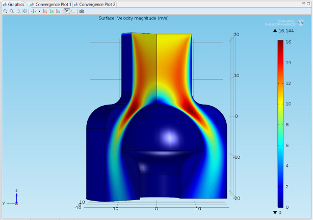
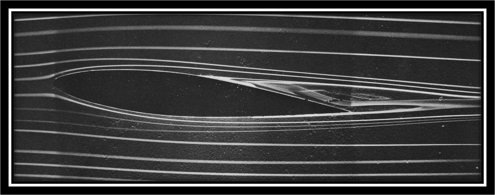

Visualising fluid motion
Contents
27. Visualising fluid motion#
In this section:
Can snapshots of the velocity field tell us about the paths taken by individual fluid particles?
Does a streak of dye injected into a fluid tell us about the paths taken by individual fluid particles?
What is a “stream function” and does every flow have one?
27.1. Streamlines#
A streamline is a curve that is parallel to the velocity field \(\underline{u}(\underline{x},t)\) at a given, fixed time \(t\) and passes through a given point \(\underline{x}_0\). A family of streamlines at time \(t\) provides a snapshot of the velocity field.
To illustrate the concepts, we will take
This field has no spatial dependence, so the streamlines are straight lines with slope \(-2t e^{-t^2}\). The direction of the streamlines changes at each instant, as shown in the figure below. The upper plot shows the slope function plotted against the time. The second row of plots shows the streamlines at intervals \(t=[0.00,0.75,1.50,2.25,3.00]\).
import numpy as np
import matplotlib.pyplot as plt
x = np.linspace(-2, 2, 10)
y = np.linspace(-2, 2, 10)
X, Y = np.meshgrid(x, y)
U=V=np.ones_like(X)
start=[[-1.5,-1.5],[-1,-1],[-0.5,-0.5],[0,0],[0.5,0.5],[1,1],[1.5,1.5]]
import matplotlib.gridspec as gridspec
fig = plt.figure(constrained_layout=True,figsize=(10,4))
spec = gridspec.GridSpec(ncols=5, nrows=2, figure=fig)
def slope(t):
return -2*t*np.exp(-t**2)
tvals=np.linspace(0,3.35,100)
n=5 #number of subplots
for s in range(n):
ax=fig.add_subplot(spec[1,s])
ax.xaxis.set_ticks([]), ax.yaxis.set_ticks([])
t=3*s/(n-1)
#ax.set_title('t='+str(t))
ax.streamplot(X,Y,U,slope(t)*V,start_points=start,density=10)
ax = fig.add_subplot(spec[0, :])
ax.plot(tvals,slope(tvals))
ax.axis([-0.35,3.35,-0.9,0.1])
ax.xaxis.set_ticks([0,0.75,1.5,2.25,3])
ax.set_title('$-2t e^{-t^2}$')
plt.show()
C:\Users\alimo\anaconda3\lib\site-packages\numpy\core\getlimits.py:172: RuntimeWarning: divide by zero encountered in exp2
eps=exp2(ld(-112)),
C:\Users\alimo\anaconda3\lib\site-packages\numpy\core\getlimits.py:51: RuntimeWarning: divide by zero encountered in log10
self.precision = int(-log10(self.eps))
C:\Users\alimo\anaconda3\lib\site-packages\numpy\core\getlimits.py:52: RuntimeWarning: divide by zero encountered in power
self.resolution = float_to_float(float_conv(10) ** (-self.precision))
C:\Users\alimo\anaconda3\lib\site-packages\numpy\core\getlimits.py:184: RuntimeWarning: divide by zero encountered in exp2
epsneg_f80 = exp2(ld(-64))
C:\Users\alimo\anaconda3\lib\site-packages\numpy\core\getlimits.py:185: RuntimeWarning: divide by zero encountered in exp2
tiny_f80 = exp2(ld(-16382))
C:\Users\alimo\anaconda3\lib\site-packages\numpy\core\getlimits.py:199: RuntimeWarning: divide by zero encountered in exp2
eps=exp2(ld(-63)),
C:\Users\alimo\anaconda3\lib\site-packages\numpy\core\getlimits.py:211: RuntimeWarning: divide by zero encountered in nextafter
huge_dd = (umath.nextafter(ld(inf), ld(0))
C:\Users\alimo\anaconda3\lib\site-packages\numpy\core\getlimits.py:224: RuntimeWarning: divide by zero encountered in exp2
eps=exp2(ld(-105)),
C:\Users\alimo\anaconda3\lib\site-packages\numpy\core\getlimits.py:225: RuntimeWarning: divide by zero encountered in exp2
epsneg= exp2(ld(-106)),
C:\Users\alimo\anaconda3\lib\site-packages\numpy\core\getlimits.py:227: RuntimeWarning: divide by zero encountered in exp2
tiny=exp2(ld(-1022)))
C:\Users\alimo\anaconda3\lib\site-packages\numpy\__init__.py:343: RuntimeWarning: divide by zero encountered in subtract
if not abs(x.dot(x) - 2.0) < 1e-5:
C:\Users\alimo\anaconda3\lib\site-packages\numpy\__init__.py:343: RuntimeWarning: divide by zero encountered in absolute
if not abs(x.dot(x) - 2.0) < 1e-5:
C:\Users\alimo\anaconda3\lib\site-packages\numpy\core\function_base.py:127: RuntimeWarning: divide by zero encountered in multiply
start = asanyarray(start) * 1.0
C:\Users\alimo\anaconda3\lib\site-packages\numpy\core\function_base.py:128: RuntimeWarning: divide by zero encountered in multiply
stop = asanyarray(stop) * 1.0
C:\Users\alimo\anaconda3\lib\site-packages\numpy\core\function_base.py:134: RuntimeWarning: divide by zero encountered in double_scalars
delta = stop - start
C:\Users\alimo\anaconda3\lib\site-packages\numpy\core\function_base.py:141: RuntimeWarning: divide by zero encountered in double_scalars
step = delta / div
C:\Users\alimo\anaconda3\lib\site-packages\numpy\core\_methods.py:56: RuntimeWarning: divide by zero encountered in reduce
return umr_any(a, axis, dtype, out, keepdims)
C:\Users\alimo\anaconda3\lib\site-packages\numpy\core\function_base.py:151: RuntimeWarning: divide by zero encountered in multiply
y *= step
C:\Users\alimo\anaconda3\lib\site-packages\numpy\core\function_base.py:161: RuntimeWarning: divide by zero encountered in add
y += start
C:\Users\alimo\anaconda3\lib\site-packages\matplotlib\colors.py:989: RuntimeWarning: divide by zero encountered in double_scalars
[(1.0 - x, y1, y0) for x, y0, y1 in reversed(data)])
C:\Users\alimo\anaconda3\lib\site-packages\matplotlib\markers.py:796: RuntimeWarning: divide by zero encountered in true_divide
np.array([(-1, -3), (+1, -3), (+1, -1), (+3, -1), (+3, +1), (+1, +1),
C:\Users\alimo\anaconda3\lib\site-packages\matplotlib\markers.py:800: RuntimeWarning: divide by zero encountered in true_divide
np.array([(+3, 0), (+3, +1), (+1, +1), (+1, +3),
C:\Users\alimo\anaconda3\lib\site-packages\matplotlib\markers.py:820: RuntimeWarning: divide by zero encountered in true_divide
np.array([(-1, -2), (0, -1), (+1, -2), (+2, -1), (+1, 0), (+2, +1),
C:\Users\alimo\anaconda3\lib\site-packages\matplotlib\markers.py:825: RuntimeWarning: divide by zero encountered in true_divide
np.array([(+1, 0), (+2, +1), (+1, +2), (0, +1),
C:\Users\alimo\anaconda3\lib\site-packages\matplotlib\tri\triinterpolate.py:668: RuntimeWarning: divide by zero encountered in true_divide
gauss_w = np.ones([9], dtype=np.float64) / 9.
C:\Users\alimo\anaconda3\lib\site-packages\numpy\core\function_base.py:127: RuntimeWarning: divide by zero encountered in multiply
start = asanyarray(start) * 1.0
C:\Users\alimo\anaconda3\lib\site-packages\numpy\core\function_base.py:128: RuntimeWarning: divide by zero encountered in multiply
stop = asanyarray(stop) * 1.0
C:\Users\alimo\anaconda3\lib\site-packages\numpy\core\function_base.py:134: RuntimeWarning: divide by zero encountered in double_scalars
delta = stop - start
C:\Users\alimo\anaconda3\lib\site-packages\numpy\core\function_base.py:141: RuntimeWarning: divide by zero encountered in double_scalars
step = delta / div
C:\Users\alimo\anaconda3\lib\site-packages\numpy\core\_methods.py:56: RuntimeWarning: divide by zero encountered in reduce
return umr_any(a, axis, dtype, out, keepdims)
C:\Users\alimo\anaconda3\lib\site-packages\numpy\core\function_base.py:151: RuntimeWarning: divide by zero encountered in multiply
y *= step
C:\Users\alimo\anaconda3\lib\site-packages\numpy\core\function_base.py:161: RuntimeWarning: divide by zero encountered in add
y += start
C:\Users\alimo\anaconda3\lib\site-packages\matplotlib\figure.py:2251: RuntimeWarning: divide by zero encountered in isfinite
if not np.isfinite(figsize).all() or (np.array(figsize) < 0).any():
C:\Users\alimo\anaconda3\lib\site-packages\numpy\core\_methods.py:62: RuntimeWarning: divide by zero encountered in reduce
return umr_all(a, axis, dtype, out, keepdims)
C:\Users\alimo\anaconda3\lib\site-packages\matplotlib\figure.py:2251: RuntimeWarning: divide by zero encountered in less
if not np.isfinite(figsize).all() or (np.array(figsize) < 0).any():
C:\Users\alimo\anaconda3\lib\site-packages\matplotlib\transforms.py:2031: RuntimeWarning: divide by zero encountered in double_scalars
self._mtx[0, 0] *= sx
C:\Users\alimo\anaconda3\lib\site-packages\matplotlib\transforms.py:2032: RuntimeWarning: divide by zero encountered in double_scalars
self._mtx[0, 1] *= sx
C:\Users\alimo\anaconda3\lib\site-packages\matplotlib\transforms.py:2033: RuntimeWarning: divide by zero encountered in double_scalars
self._mtx[0, 2] *= sx
C:\Users\alimo\anaconda3\lib\site-packages\matplotlib\transforms.py:2034: RuntimeWarning: divide by zero encountered in double_scalars
self._mtx[1, 0] *= sy
C:\Users\alimo\anaconda3\lib\site-packages\matplotlib\transforms.py:2035: RuntimeWarning: divide by zero encountered in double_scalars
self._mtx[1, 1] *= sy
C:\Users\alimo\anaconda3\lib\site-packages\matplotlib\transforms.py:2036: RuntimeWarning: divide by zero encountered in double_scalars
self._mtx[1, 2] *= sy
C:\Users\alimo\anaconda3\lib\site-packages\matplotlib\transforms.py:378: RuntimeWarning: divide by zero encountered in double_scalars
return points[1, 0] - points[0, 0]
C:\Users\alimo\anaconda3\lib\site-packages\matplotlib\transforms.py:384: RuntimeWarning: divide by zero encountered in double_scalars
return points[1, 1] - points[0, 1]
C:\Users\alimo\anaconda3\lib\site-packages\numpy\lib\function_base.py:1281: RuntimeWarning: divide by zero encountered in subtract
a = op(a[slice1], a[slice2])
C:\Users\alimo\anaconda3\lib\site-packages\matplotlib\ticker.py:2142: RuntimeWarning: divide by zero encountered in less_equal
if np.any(np.diff(steps) <= 0) or steps[-1] > 10 or steps[0] < 1:
C:\Users\alimo\anaconda3\lib\site-packages\numpy\core\fromnumeric.py:87: RuntimeWarning: divide by zero encountered in reduce
return ufunc.reduce(obj, axis, dtype, out, **passkwargs)
C:\Users\alimo\anaconda3\lib\site-packages\matplotlib\ticker.py:2155: RuntimeWarning: divide by zero encountered in multiply
return np.concatenate([0.1 * steps[:-1], steps, [10 * steps[1]]])
C:\Users\alimo\anaconda3\lib\site-packages\matplotlib\ticker.py:2155: RuntimeWarning: divide by zero encountered in double_scalars
return np.concatenate([0.1 * steps[:-1], steps, [10 * steps[1]]])
C:\Users\alimo\anaconda3\lib\site-packages\matplotlib\axes\_base.py:3438: RuntimeWarning: divide by zero encountered in isfinite
and not np.isfinite(converted_limit)):
C:\Users\alimo\anaconda3\lib\site-packages\matplotlib\transforms.py:2827: RuntimeWarning: divide by zero encountered in isfinite
if (not np.isfinite(vmin)) or (not np.isfinite(vmax)):
C:\Users\alimo\anaconda3\lib\site-packages\matplotlib\transforms.py:2840: RuntimeWarning: divide by zero encountered in double_scalars
if maxabsvalue < (1e6 / tiny) * np.finfo(float).tiny:
C:\Users\alimo\anaconda3\lib\site-packages\matplotlib\transforms.py:2012: RuntimeWarning: divide by zero encountered in double_scalars
self._mtx[0, 2] += tx
C:\Users\alimo\anaconda3\lib\site-packages\matplotlib\transforms.py:2013: RuntimeWarning: divide by zero encountered in double_scalars
self._mtx[1, 2] += ty
C:\Users\alimo\anaconda3\lib\site-packages\matplotlib\gridspec.py:202: RuntimeWarning: divide by zero encountered in subtract
fig_tops, fig_bottoms = (top - cell_hs).reshape((-1, 2)).T
C:\Users\alimo\anaconda3\lib\site-packages\matplotlib\gridspec.py:203: RuntimeWarning: divide by zero encountered in add
fig_lefts, fig_rights = (left + cell_ws).reshape((-1, 2)).T
C:\Users\alimo\anaconda3\lib\site-packages\numpy\core\_methods.py:43: RuntimeWarning: divide by zero encountered in reduce
return umr_minimum(a, axis, None, out, keepdims, initial, where)
C:\Users\alimo\anaconda3\lib\site-packages\numpy\core\_methods.py:39: RuntimeWarning: divide by zero encountered in reduce
return umr_maximum(a, axis, None, out, keepdims, initial, where)
C:\Users\alimo\anaconda3\lib\site-packages\matplotlib\transforms.py:1041: RuntimeWarning: divide by zero encountered in not_equal
if np.any(self._points != other.get_points()):
C:\Users\alimo\AppData\Local\Temp/ipykernel_10888/2050004932.py:14: RuntimeWarning: divide by zero encountered in exp
return -2*t*np.exp(-t**2)
C:\Users\alimo\AppData\Local\Temp/ipykernel_10888/2050004932.py:14: RuntimeWarning: divide by zero encountered in double_scalars
return -2*t*np.exp(-t**2)
C:\Users\alimo\AppData\Local\Temp/ipykernel_10888/2050004932.py:25: RuntimeWarning: divide by zero encountered in multiply
ax.streamplot(X,Y,U,slope(t)*V,start_points=start,density=10)
C:\Users\alimo\anaconda3\lib\site-packages\numpy\core\numeric.py:2362: RuntimeWarning: divide by zero encountered in isfinite
xfin = isfinite(x)
C:\Users\alimo\anaconda3\lib\site-packages\numpy\core\numeric.py:2363: RuntimeWarning: divide by zero encountered in isfinite
yfin = isfinite(y)
C:\Users\alimo\anaconda3\lib\site-packages\numpy\core\numeric.py:2346: RuntimeWarning: divide by zero encountered in subtract
return less_equal(abs(x-y), atol + rtol * abs(y))
C:\Users\alimo\anaconda3\lib\site-packages\numpy\core\numeric.py:2346: RuntimeWarning: divide by zero encountered in absolute
return less_equal(abs(x-y), atol + rtol * abs(y))
C:\Users\alimo\anaconda3\lib\site-packages\numpy\core\numeric.py:2346: RuntimeWarning: divide by zero encountered in multiply
return less_equal(abs(x-y), atol + rtol * abs(y))
C:\Users\alimo\anaconda3\lib\site-packages\numpy\core\numeric.py:2346: RuntimeWarning: divide by zero encountered in add
return less_equal(abs(x-y), atol + rtol * abs(y))
C:\Users\alimo\anaconda3\lib\site-packages\numpy\core\numeric.py:2346: RuntimeWarning: divide by zero encountered in less_equal
return less_equal(abs(x-y), atol + rtol * abs(y))
C:\Users\alimo\anaconda3\lib\site-packages\matplotlib\streamplot.py:336: RuntimeWarning: divide by zero encountered in greater
if not (np.diff(x) > 0).all():
C:\Users\alimo\anaconda3\lib\site-packages\matplotlib\streamplot.py:338: RuntimeWarning: divide by zero encountered in greater
if not (np.diff(y) > 0).all():
C:\Users\alimo\anaconda3\lib\site-packages\matplotlib\streamplot.py:344: RuntimeWarning: divide by zero encountered in double_scalars
self.dx = x[1] - x[0]
C:\Users\alimo\anaconda3\lib\site-packages\matplotlib\streamplot.py:345: RuntimeWarning: divide by zero encountered in double_scalars
self.dy = y[1] - y[0]
C:\Users\alimo\anaconda3\lib\site-packages\matplotlib\streamplot.py:350: RuntimeWarning: divide by zero encountered in double_scalars
self.width = x[-1] - x[0]
C:\Users\alimo\anaconda3\lib\site-packages\matplotlib\streamplot.py:351: RuntimeWarning: divide by zero encountered in double_scalars
self.height = y[-1] - y[0]
C:\Users\alimo\anaconda3\lib\site-packages\matplotlib\streamplot.py:353: RuntimeWarning: divide by zero encountered in double_scalars
if not np.allclose(np.diff(x), self.width / (self.nx - 1)):
C:\Users\alimo\anaconda3\lib\site-packages\numpy\core\numeric.py:2346: RuntimeWarning: divide by zero encountered in double_scalars
return less_equal(abs(x-y), atol + rtol * abs(y))
C:\Users\alimo\anaconda3\lib\site-packages\matplotlib\streamplot.py:355: RuntimeWarning: divide by zero encountered in double_scalars
if not np.allclose(np.diff(y), self.height / (self.ny - 1)):
C:\Users\alimo\anaconda3\lib\site-packages\matplotlib\streamplot.py:381: RuntimeWarning: divide by zero encountered in multiply
self.nx, self.ny = (30 * np.broadcast_to(density, 2)).astype(int)
C:\Users\alimo\anaconda3\lib\site-packages\matplotlib\streamplot.py:271: RuntimeWarning: divide by zero encountered in long_scalars
self.x_grid2mask = (mask.nx - 1) / (grid.nx - 1)
C:\Users\alimo\anaconda3\lib\site-packages\matplotlib\streamplot.py:272: RuntimeWarning: divide by zero encountered in long_scalars
self.y_grid2mask = (mask.ny - 1) / (grid.ny - 1)
C:\Users\alimo\anaconda3\lib\site-packages\matplotlib\streamplot.py:274: RuntimeWarning: divide by zero encountered in double_scalars
self.x_mask2grid = 1. / self.x_grid2mask
C:\Users\alimo\anaconda3\lib\site-packages\matplotlib\streamplot.py:275: RuntimeWarning: divide by zero encountered in double_scalars
self.y_mask2grid = 1. / self.y_grid2mask
C:\Users\alimo\anaconda3\lib\site-packages\matplotlib\streamplot.py:277: RuntimeWarning: divide by zero encountered in double_scalars
self.x_data2grid = 1. / grid.dx
C:\Users\alimo\anaconda3\lib\site-packages\matplotlib\streamplot.py:278: RuntimeWarning: divide by zero encountered in double_scalars
self.y_data2grid = 1. / grid.dy
C:\Users\alimo\anaconda3\lib\site-packages\numpy\ma\core.py:2365: RuntimeWarning: divide by zero encountered in isfinite
condition = ~(np.isfinite(a))
C:\Users\alimo\anaconda3\lib\site-packages\numpy\ma\core.py:2365: RuntimeWarning: divide by zero encountered in invert
condition = ~(np.isfinite(a))
C:\Users\alimo\anaconda3\lib\site-packages\numpy\ma\core.py:1024: RuntimeWarning: divide by zero encountered in logical_or
m = umath.logical_or(ma, getmaskarray(b))
C:\Users\alimo\anaconda3\lib\site-packages\numpy\ma\core.py:1160: RuntimeWarning: divide by zero encountered in isfinite
m = ~umath.isfinite(result)
C:\Users\alimo\anaconda3\lib\site-packages\numpy\ma\core.py:1160: RuntimeWarning: divide by zero encountered in invert
m = ~umath.isfinite(result)
C:\Users\alimo\anaconda3\lib\site-packages\numpy\ma\core.py:1161: RuntimeWarning: divide by zero encountered in bitwise_or
m |= getmask(a)
C:\Users\alimo\anaconda3\lib\site-packages\numpy\ma\core.py:1162: RuntimeWarning: divide by zero encountered in bitwise_or
m |= getmask(b)
C:\Users\alimo\anaconda3\lib\site-packages\numpy\ma\core.py:853: RuntimeWarning: divide by zero encountered in absolute
return umath.absolute(a) * self.tolerance >= umath.absolute(b)
C:\Users\alimo\anaconda3\lib\site-packages\numpy\ma\core.py:853: RuntimeWarning: divide by zero encountered in multiply
return umath.absolute(a) * self.tolerance >= umath.absolute(b)
C:\Users\alimo\anaconda3\lib\site-packages\numpy\ma\core.py:853: RuntimeWarning: divide by zero encountered in greater_equal
return umath.absolute(a) * self.tolerance >= umath.absolute(b)
C:\Users\alimo\anaconda3\lib\site-packages\numpy\ma\core.py:1166: RuntimeWarning: divide by zero encountered in bitwise_or
m |= domain(da, db)
C:\Users\alimo\anaconda3\lib\site-packages\numpy\ma\core.py:1178: RuntimeWarning: divide by zero encountered in multiply
masked_da = umath.multiply(m, da)
C:\Users\alimo\anaconda3\lib\site-packages\numpy\ma\core.py:1181: RuntimeWarning: divide by zero encountered in add
result += masked_da
C:\Users\alimo\anaconda3\lib\site-packages\numpy\ma\core.py:6849: RuntimeWarning: divide by zero encountered in isfinite
invalid = np.logical_not(np.isfinite(result.view(ndarray)))
C:\Users\alimo\anaconda3\lib\site-packages\numpy\ma\core.py:6849: RuntimeWarning: divide by zero encountered in logical_not
invalid = np.logical_not(np.isfinite(result.view(ndarray)))
C:\Users\alimo\anaconda3\lib\site-packages\numpy\ma\core.py:937: RuntimeWarning: divide by zero encountered in isfinite
m = ~umath.isfinite(result)
C:\Users\alimo\anaconda3\lib\site-packages\numpy\ma\core.py:937: RuntimeWarning: divide by zero encountered in invert
m = ~umath.isfinite(result)
C:\Users\alimo\anaconda3\lib\site-packages\numpy\ma\core.py:885: RuntimeWarning: divide by zero encountered in less
return umath.less(x, self.critical_value)
C:\Users\alimo\anaconda3\lib\site-packages\numpy\ma\core.py:938: RuntimeWarning: divide by zero encountered in bitwise_or
m |= self.domain(d)
C:\Users\alimo\anaconda3\lib\site-packages\numpy\ma\core.py:939: RuntimeWarning: divide by zero encountered in bitwise_or
m |= getmask(a)
C:\Users\alimo\anaconda3\lib\site-packages\matplotlib\streamplot.py:157: RuntimeWarning: divide by zero encountered in double_scalars
if not (grid.x_origin <= xs <= grid.x_origin + grid.width and
C:\Users\alimo\anaconda3\lib\site-packages\matplotlib\streamplot.py:158: RuntimeWarning: divide by zero encountered in double_scalars
grid.y_origin <= ys <= grid.y_origin + grid.height):
C:\Users\alimo\anaconda3\lib\site-packages\matplotlib\streamplot.py:165: RuntimeWarning: divide by zero encountered in subtract
sp2[:, 0] -= grid.x_origin
C:\Users\alimo\anaconda3\lib\site-packages\matplotlib\streamplot.py:166: RuntimeWarning: divide by zero encountered in subtract
sp2[:, 1] -= grid.y_origin
C:\Users\alimo\anaconda3\lib\site-packages\matplotlib\streamplot.py:289: RuntimeWarning: divide by zero encountered in double_scalars
return xd * self.x_data2grid, yd * self.y_data2grid
C:\Users\alimo\anaconda3\lib\site-packages\matplotlib\streamplot.py:282: RuntimeWarning: divide by zero encountered in double_scalars
return (int(xi * self.x_grid2mask + 0.5),
C:\Users\alimo\anaconda3\lib\site-packages\matplotlib\streamplot.py:283: RuntimeWarning: divide by zero encountered in double_scalars
int(yi * self.y_grid2mask + 0.5))
C:\Users\alimo\anaconda3\lib\site-packages\matplotlib\streamplot.py:538: RuntimeWarning: divide by zero encountered in true_divide
maxds = min(1. / dmap.mask.nx, 1. / dmap.mask.ny, 0.1)
C:\Users\alimo\anaconda3\lib\site-packages\matplotlib\streamplot.py:657: RuntimeWarning: divide by zero encountered in double_scalars
xt = xi - x
C:\Users\alimo\anaconda3\lib\site-packages\matplotlib\streamplot.py:658: RuntimeWarning: divide by zero encountered in double_scalars
yt = yi - y
C:\Users\alimo\anaconda3\lib\site-packages\matplotlib\streamplot.py:659: RuntimeWarning: divide by zero encountered in double_scalars
a0 = a00 * (1 - xt) + a01 * xt
C:\Users\alimo\anaconda3\lib\site-packages\matplotlib\streamplot.py:660: RuntimeWarning: divide by zero encountered in double_scalars
a1 = a10 * (1 - xt) + a11 * xt
C:\Users\alimo\anaconda3\lib\site-packages\matplotlib\streamplot.py:661: RuntimeWarning: divide by zero encountered in double_scalars
ai = a0 * (1 - yt) + a1 * yt
C:\Users\alimo\anaconda3\lib\site-packages\matplotlib\streamplot.py:447: RuntimeWarning: divide by zero encountered in double_scalars
dt_ds = 1. / ds_dt
C:\Users\alimo\anaconda3\lib\site-packages\matplotlib\streamplot.py:450: RuntimeWarning: divide by zero encountered in double_scalars
return ui * dt_ds, vi * dt_ds
C:\Users\alimo\anaconda3\lib\site-packages\matplotlib\streamplot.py:559: RuntimeWarning: divide by zero encountered in double_scalars
k2x, k2y = f(xi + ds * k1x, yi + ds * k1y)
C:\Users\alimo\anaconda3\lib\site-packages\matplotlib\streamplot.py:573: RuntimeWarning: divide by zero encountered in double_scalars
dx1 = ds * k1x
C:\Users\alimo\anaconda3\lib\site-packages\matplotlib\streamplot.py:574: RuntimeWarning: divide by zero encountered in double_scalars
dy1 = ds * k1y
C:\Users\alimo\anaconda3\lib\site-packages\matplotlib\streamplot.py:575: RuntimeWarning: divide by zero encountered in double_scalars
dx2 = ds * 0.5 * (k1x + k2x)
C:\Users\alimo\anaconda3\lib\site-packages\matplotlib\streamplot.py:576: RuntimeWarning: divide by zero encountered in double_scalars
dy2 = ds * 0.5 * (k1y + k2y)
C:\Users\alimo\anaconda3\lib\site-packages\matplotlib\streamplot.py:580: RuntimeWarning: divide by zero encountered in double_scalars
error = np.hypot((dx2 - dx1) / (nx - 1), (dy2 - dy1) / (ny - 1))
C:\Users\alimo\anaconda3\lib\site-packages\matplotlib\streamplot.py:580: RuntimeWarning: divide by zero encountered in hypot
error = np.hypot((dx2 - dx1) / (nx - 1), (dy2 - dy1) / (ny - 1))
C:\Users\alimo\anaconda3\lib\site-packages\matplotlib\streamplot.py:584: RuntimeWarning: divide by zero encountered in double_scalars
xi += dx2
C:\Users\alimo\anaconda3\lib\site-packages\matplotlib\streamplot.py:585: RuntimeWarning: divide by zero encountered in double_scalars
yi += dy2
C:\Users\alimo\anaconda3\lib\site-packages\matplotlib\streamplot.py:590: RuntimeWarning: divide by zero encountered in double_scalars
if stotal + ds > maxlength:
C:\Users\alimo\anaconda3\lib\site-packages\matplotlib\streamplot.py:592: RuntimeWarning: divide by zero encountered in double_scalars
stotal += ds
C:\Users\alimo\anaconda3\lib\site-packages\matplotlib\streamplot.py:612: RuntimeWarning: divide by zero encountered in double_scalars
dsx = xi / -cx
C:\Users\alimo\anaconda3\lib\site-packages\matplotlib\streamplot.py:622: RuntimeWarning: divide by zero encountered in double_scalars
xf_traj.append(xi + cx * ds)
C:\Users\alimo\anaconda3\lib\site-packages\matplotlib\streamplot.py:623: RuntimeWarning: divide by zero encountered in double_scalars
yf_traj.append(yi + cy * ds)
C:\Users\alimo\anaconda3\lib\site-packages\matplotlib\streamplot.py:568: RuntimeWarning: divide by zero encountered in double_scalars
stotal += ds
C:\Users\alimo\anaconda3\lib\site-packages\matplotlib\streamplot.py:476: RuntimeWarning: divide by zero encountered in double_scalars
stotal += s
C:\Users\alimo\anaconda3\lib\site-packages\matplotlib\streamplot.py:614: RuntimeWarning: divide by zero encountered in double_scalars
dsx = (nx - 1 - xi) / cx
C:\Users\alimo\anaconda3\lib\site-packages\matplotlib\streamplot.py:486: RuntimeWarning: divide by zero encountered in double_scalars
stotal += s
C:\Users\alimo\anaconda3\lib\site-packages\matplotlib\streamplot.py:292: RuntimeWarning: divide by zero encountered in true_divide
return xg / self.x_data2grid, yg / self.y_data2grid
C:\Users\alimo\anaconda3\lib\site-packages\matplotlib\streamplot.py:189: RuntimeWarning: divide by zero encountered in add
tx += grid.x_origin
C:\Users\alimo\anaconda3\lib\site-packages\matplotlib\streamplot.py:190: RuntimeWarning: divide by zero encountered in add
ty += grid.y_origin
C:\Users\alimo\anaconda3\lib\site-packages\matplotlib\streamplot.py:196: RuntimeWarning: divide by zero encountered in hypot
s = np.cumsum(np.hypot(np.diff(tx), np.diff(ty)))
C:\Users\alimo\anaconda3\lib\site-packages\matplotlib\streamplot.py:197: RuntimeWarning: divide by zero encountered in double_scalars
n = np.searchsorted(s, s[-1] / 2.)
C:\Users\alimo\anaconda3\lib\site-packages\matplotlib\streamplot.py:199: RuntimeWarning: divide by zero encountered in int_scalars
arrow_head = (np.mean(tx[n:n + 2]), np.mean(ty[n:n + 2]))
C:\Users\alimo\anaconda3\lib\site-packages\numpy\core\_methods.py:75: RuntimeWarning: divide by zero encountered in int_scalars
items *= arr.shape[mu.normalize_axis_index(ax, arr.ndim)]
C:\Users\alimo\anaconda3\lib\site-packages\numpy\core\_methods.py:178: RuntimeWarning: divide by zero encountered in reduce
ret = umr_sum(arr, axis, dtype, out, keepdims, where=where)
C:\Users\alimo\anaconda3\lib\site-packages\numpy\core\_methods.py:188: RuntimeWarning: divide by zero encountered in double_scalars
ret = ret.dtype.type(ret / rcount)
C:\Users\alimo\anaconda3\lib\site-packages\matplotlib\transforms.py:396: RuntimeWarning: divide by zero encountered in double_scalars
return (x0, y0, x1 - x0, y1 - y0)
C:\Users\alimo\anaconda3\lib\site-packages\matplotlib\transforms.py:1760: RuntimeWarning: divide by zero encountered in equal
return np.all(self.get_matrix() == other.get_matrix())
C:\Users\alimo\anaconda3\lib\site-packages\matplotlib\transforms.py:2622: RuntimeWarning: divide by zero encountered in double_scalars
x_scale = 1.0 / inw
C:\Users\alimo\anaconda3\lib\site-packages\matplotlib\transforms.py:2623: RuntimeWarning: divide by zero encountered in double_scalars
y_scale = 1.0 / inh
C:\Users\alimo\anaconda3\lib\site-packages\matplotlib\transforms.py:2624: RuntimeWarning: divide by zero encountered in double_scalars
self._mtx = np.array([[x_scale, 0.0 , (-inl*x_scale)],
C:\Users\alimo\anaconda3\lib\site-packages\matplotlib\transforms.py:2625: RuntimeWarning: divide by zero encountered in double_scalars
[0.0 , y_scale, (-inb*y_scale)],
C:\Users\alimo\anaconda3\lib\site-packages\matplotlib\patches.py:2550: RuntimeWarning: divide by zero encountered in double_scalars
x12, y12 = (x1 + x2) / 2., (y1 + y2) / 2.
C:\Users\alimo\anaconda3\lib\site-packages\matplotlib\patches.py:2551: RuntimeWarning: divide by zero encountered in double_scalars
dx, dy = x2 - x1, y2 - y1
C:\Users\alimo\anaconda3\lib\site-packages\matplotlib\patches.py:2555: RuntimeWarning: divide by zero encountered in double_scalars
cx, cy = x12 + f * dy, y12 - f * dx
C:\Users\alimo\anaconda3\lib\site-packages\matplotlib\bezier.py:418: RuntimeWarning: divide by zero encountered in double_scalars
return (x - cx) ** 2 + (y - cy) ** 2 < r2
C:\Users\alimo\anaconda3\lib\site-packages\matplotlib\bezier.py:363: RuntimeWarning: divide by zero encountered in not_equal
if inside(ctl_points[-2:]) != begin_inside:
C:\Users\alimo\anaconda3\lib\site-packages\matplotlib\patches.py:2939: RuntimeWarning: divide by zero encountered in true_divide
vertices = path.vertices / [1, aspect_ratio]
C:\Users\alimo\anaconda3\lib\site-packages\matplotlib\patches.py:3026: RuntimeWarning: divide by zero encountered in hypot
head_dist = np.hypot(head_length, head_width)
C:\Users\alimo\anaconda3\lib\site-packages\matplotlib\patches.py:3027: RuntimeWarning: divide by zero encountered in double_scalars
cos_t, sin_t = head_length / head_dist, head_width / head_dist
C:\Users\alimo\anaconda3\lib\site-packages\matplotlib\patches.py:2990: RuntimeWarning: divide by zero encountered in double_scalars
dx, dy = x0 - x1, y0 - y1
C:\Users\alimo\anaconda3\lib\site-packages\matplotlib\patches.py:2992: RuntimeWarning: divide by zero encountered in hypot
cp_distance = np.hypot(dx, dy)
C:\Users\alimo\anaconda3\lib\site-packages\matplotlib\patches.py:2996: RuntimeWarning: divide by zero encountered in double_scalars
pad_projected = (.5 * linewidth / sin_t)
C:\Users\alimo\anaconda3\lib\site-packages\matplotlib\patches.py:3003: RuntimeWarning: divide by zero encountered in double_scalars
ddx = pad_projected * dx / cp_distance
C:\Users\alimo\anaconda3\lib\site-packages\matplotlib\patches.py:3004: RuntimeWarning: divide by zero encountered in double_scalars
ddy = pad_projected * dy / cp_distance
C:\Users\alimo\anaconda3\lib\site-packages\matplotlib\patches.py:3007: RuntimeWarning: divide by zero encountered in double_scalars
dx = dx / cp_distance * head_dist
C:\Users\alimo\anaconda3\lib\site-packages\matplotlib\patches.py:3008: RuntimeWarning: divide by zero encountered in double_scalars
dy = dy / cp_distance * head_dist
C:\Users\alimo\anaconda3\lib\site-packages\matplotlib\patches.py:3010: RuntimeWarning: divide by zero encountered in double_scalars
dx1, dy1 = cos_t * dx + sin_t * dy, -sin_t * dx + cos_t * dy
C:\Users\alimo\anaconda3\lib\site-packages\matplotlib\patches.py:3011: RuntimeWarning: divide by zero encountered in double_scalars
dx2, dy2 = cos_t * dx - sin_t * dy, sin_t * dx + cos_t * dy
C:\Users\alimo\anaconda3\lib\site-packages\matplotlib\patches.py:3013: RuntimeWarning: divide by zero encountered in double_scalars
vertices_arrow = [(x1 + ddx + dx1, y1 + ddy + dy1),
C:\Users\alimo\anaconda3\lib\site-packages\matplotlib\patches.py:3014: RuntimeWarning: divide by zero encountered in double_scalars
(x1 + ddx, y1 + ddy),
C:\Users\alimo\anaconda3\lib\site-packages\matplotlib\patches.py:3015: RuntimeWarning: divide by zero encountered in double_scalars
(x1 + ddx + dx2, y1 + ddy + dy2)]
C:\Users\alimo\anaconda3\lib\site-packages\matplotlib\patches.py:3057: RuntimeWarning: divide by zero encountered in double_scalars
_path = [Path(np.concatenate([[(x0 + ddxA, y0 + ddyA)],
C:\Users\alimo\anaconda3\lib\site-packages\matplotlib\patches.py:3059: RuntimeWarning: divide by zero encountered in double_scalars
[(x3 + ddxB, y3 + ddyB)]]),
C:\Users\alimo\anaconda3\lib\site-packages\matplotlib\patches.py:2950: RuntimeWarning: divide by zero encountered in multiply
Path(p.vertices * [1, aspect_ratio], p.codes))
C:\Users\alimo\anaconda3\lib\site-packages\matplotlib\path.py:336: RuntimeWarning: divide by zero encountered in not_equal
not_stop_mask = codes != cls.STOP
C:\Users\alimo\anaconda3\lib\site-packages\numpy\lib\arraysetops.py:579: RuntimeWarning: divide by zero encountered in not_equal
mask &= (ar1 != a)
C:\Users\alimo\anaconda3\lib\site-packages\numpy\lib\arraysetops.py:579: RuntimeWarning: divide by zero encountered in bitwise_and
mask &= (ar1 != a)
C:\Users\alimo\anaconda3\lib\site-packages\matplotlib\axes\_base.py:2284: RuntimeWarning: divide by zero encountered in isfinite
if not np.any(np.isfinite(xys)):
C:\Users\alimo\anaconda3\lib\site-packages\matplotlib\lines.py:69: RuntimeWarning: divide by zero encountered in double_scalars
scaled_offset = offset * lw
C:\Users\alimo\anaconda3\lib\site-packages\matplotlib\streamplot.py:218: RuntimeWarning: divide by zero encountered in double_scalars
lc.sticky_edges.x[:] = [grid.x_origin, grid.x_origin + grid.width]
C:\Users\alimo\anaconda3\lib\site-packages\matplotlib\streamplot.py:219: RuntimeWarning: divide by zero encountered in double_scalars
lc.sticky_edges.y[:] = [grid.y_origin, grid.y_origin + grid.height]
C:\Users\alimo\anaconda3\lib\site-packages\matplotlib\axes\_base.py:2065: RuntimeWarning: divide by zero encountered in isinf
if not np.isinf(datalim.minpos).all():
C:\Users\alimo\anaconda3\lib\site-packages\matplotlib\axes\_base.py:2708: RuntimeWarning: divide by zero encountered in isfinite
x_values = np.extract(np.isfinite(x_values), x_values)
C:\Users\alimo\anaconda3\lib\site-packages\matplotlib\axes\_base.py:2725: RuntimeWarning: divide by zero encountered in int_scalars
i0 = stickies.searchsorted(x0 + tol) - 1
C:\Users\alimo\anaconda3\lib\site-packages\matplotlib\axes\_base.py:2737: RuntimeWarning: divide by zero encountered in double_scalars
delta = (x1t - x0t) * margin
C:\Users\alimo\anaconda3\lib\site-packages\matplotlib\axes\_base.py:2738: RuntimeWarning: divide by zero encountered in isfinite
if not np.isfinite(delta):
C:\Users\alimo\anaconda3\lib\site-packages\matplotlib\axes\_base.py:2740: RuntimeWarning: divide by zero encountered in double_scalars
x0, x1 = inverse_trans.transform([x0t - delta, x1t + delta])
C:\Users\alimo\anaconda3\lib\site-packages\matplotlib\streamplot.py:598: RuntimeWarning: divide by zero encountered in double_scalars
ds = min(maxds, 0.85 * ds * (maxerror / error) ** 0.5)
C:\Users\alimo\anaconda3\lib\site-packages\matplotlib\streamplot.py:620: RuntimeWarning: divide by zero encountered in double_scalars
dsy = (ny - 1 - yi) / cy
C:\Users\alimo\anaconda3\lib\site-packages\matplotlib\streamplot.py:618: RuntimeWarning: divide by zero encountered in double_scalars
dsy = yi / -cy
C:\Users\alimo\AppData\Local\Temp/ipykernel_10888/2050004932.py:14: RuntimeWarning: divide by zero encountered in multiply
return -2*t*np.exp(-t**2)
C:\Users\alimo\AppData\Local\Temp/ipykernel_10888/2050004932.py:14: RuntimeWarning: divide by zero encountered in square
return -2*t*np.exp(-t**2)
C:\Users\alimo\AppData\Local\Temp/ipykernel_10888/2050004932.py:14: RuntimeWarning: divide by zero encountered in negative
return -2*t*np.exp(-t**2)
C:\Users\alimo\anaconda3\lib\site-packages\numpy\core\fromnumeric.py:87: RuntimeWarning: divide by zero encountered in reduce
return ufunc.reduce(obj, axis, dtype, out, **passkwargs)
C:\Users\alimo\anaconda3\lib\site-packages\matplotlib\transforms.py:2012: RuntimeWarning: divide by zero encountered in double_scalars
self._mtx[0, 2] += tx
C:\Users\alimo\anaconda3\lib\site-packages\matplotlib\transforms.py:2013: RuntimeWarning: divide by zero encountered in double_scalars
self._mtx[1, 2] += ty
C:\Users\alimo\anaconda3\lib\site-packages\matplotlib\transforms.py:1760: RuntimeWarning: divide by zero encountered in equal
return np.all(self.get_matrix() == other.get_matrix())
C:\Users\alimo\anaconda3\lib\site-packages\matplotlib\axes\_base.py:3438: RuntimeWarning: divide by zero encountered in isfinite
and not np.isfinite(converted_limit)):
C:\Users\alimo\anaconda3\lib\site-packages\matplotlib\transforms.py:2827: RuntimeWarning: divide by zero encountered in isfinite
if (not np.isfinite(vmin)) or (not np.isfinite(vmax)):
C:\Users\alimo\anaconda3\lib\site-packages\matplotlib\transforms.py:2840: RuntimeWarning: divide by zero encountered in double_scalars
if maxabsvalue < (1e6 / tiny) * np.finfo(float).tiny:
C:\Users\alimo\anaconda3\lib\site-packages\matplotlib\transforms.py:2031: RuntimeWarning: divide by zero encountered in double_scalars
self._mtx[0, 0] *= sx
C:\Users\alimo\anaconda3\lib\site-packages\matplotlib\transforms.py:2032: RuntimeWarning: divide by zero encountered in double_scalars
self._mtx[0, 1] *= sx
C:\Users\alimo\anaconda3\lib\site-packages\matplotlib\transforms.py:2033: RuntimeWarning: divide by zero encountered in double_scalars
self._mtx[0, 2] *= sx
C:\Users\alimo\anaconda3\lib\site-packages\matplotlib\transforms.py:2034: RuntimeWarning: divide by zero encountered in double_scalars
self._mtx[1, 0] *= sy
C:\Users\alimo\anaconda3\lib\site-packages\matplotlib\transforms.py:2035: RuntimeWarning: divide by zero encountered in double_scalars
self._mtx[1, 1] *= sy
C:\Users\alimo\anaconda3\lib\site-packages\matplotlib\transforms.py:2036: RuntimeWarning: divide by zero encountered in double_scalars
self._mtx[1, 2] *= sy
C:\Users\alimo\anaconda3\lib\site-packages\matplotlib\transforms.py:396: RuntimeWarning: divide by zero encountered in double_scalars
return (x0, y0, x1 - x0, y1 - y0)
C:\Users\alimo\anaconda3\lib\site-packages\matplotlib\transforms.py:384: RuntimeWarning: divide by zero encountered in double_scalars
return points[1, 1] - points[0, 1]
C:\Users\alimo\anaconda3\lib\site-packages\matplotlib\axis.py:2539: RuntimeWarning: divide by zero encountered in double_scalars
length = ends.height * 72
C:\Users\alimo\anaconda3\lib\site-packages\matplotlib\axis.py:2543: RuntimeWarning: divide by zero encountered in double_scalars
return int(np.floor(length / size))
C:\Users\alimo\anaconda3\lib\site-packages\matplotlib\axis.py:2543: RuntimeWarning: divide by zero encountered in floor
return int(np.floor(length / size))
C:\Users\alimo\anaconda3\lib\site-packages\numpy\core\_methods.py:96: RuntimeWarning: divide by zero encountered in isnan
return um.isnan(a)
C:\Users\alimo\anaconda3\lib\site-packages\numpy\core\_methods.py:112: RuntimeWarning: divide by zero encountered in clip
return ufunc(*args, out=out, **kwargs)
C:\Users\alimo\anaconda3\lib\site-packages\matplotlib\ticker.py:2027: RuntimeWarning: divide by zero encountered in true_divide
scale = 10 ** (math.log10(dv / n) // 1)
C:\Users\alimo\anaconda3\lib\site-packages\matplotlib\ticker.py:2221: RuntimeWarning: divide by zero encountered in true_divide
raw_step = (_vmax - _vmin) / nbins
C:\Users\alimo\anaconda3\lib\site-packages\matplotlib\ticker.py:2222: RuntimeWarning: divide by zero encountered in multiply
steps = self._extended_steps * scale
C:\Users\alimo\anaconda3\lib\site-packages\matplotlib\ticker.py:2228: RuntimeWarning: divide by zero encountered in greater_equal
istep = np.nonzero(steps >= raw_step)[0][0]
C:\Users\alimo\anaconda3\lib\site-packages\matplotlib\ticker.py:2240: RuntimeWarning: divide by zero encountered in int_scalars
for istep in reversed(range(istep + 1)):
C:\Users\alimo\anaconda3\lib\site-packages\matplotlib\ticker.py:2246: RuntimeWarning: divide by zero encountered in double_scalars
best_vmin = (_vmin // step) * step
C:\Users\alimo\anaconda3\lib\site-packages\matplotlib\ticker.py:2253: RuntimeWarning: divide by zero encountered in double_scalars
low = edge.le(_vmin - best_vmin)
C:\Users\alimo\anaconda3\lib\site-packages\matplotlib\ticker.py:2061: RuntimeWarning: divide by zero encountered in double_scalars
d, m = divmod(x, self.step)
C:\Users\alimo\anaconda3\lib\site-packages\matplotlib\ticker.py:2062: RuntimeWarning: divide by zero encountered in double_scalars
if self.closeto(m / self.step, 1):
C:\Users\alimo\anaconda3\lib\site-packages\matplotlib\ticker.py:2057: RuntimeWarning: divide by zero encountered in double_scalars
return abs(ms - edge) < tol
C:\Users\alimo\anaconda3\lib\site-packages\matplotlib\ticker.py:2254: RuntimeWarning: divide by zero encountered in double_scalars
high = edge.ge(_vmax - best_vmin)
C:\Users\alimo\anaconda3\lib\site-packages\matplotlib\ticker.py:2068: RuntimeWarning: divide by zero encountered in double_scalars
d, m = divmod(x, self.step)
C:\Users\alimo\anaconda3\lib\site-packages\matplotlib\ticker.py:2069: RuntimeWarning: divide by zero encountered in double_scalars
if self.closeto(m / self.step, 0):
C:\Users\alimo\anaconda3\lib\site-packages\matplotlib\ticker.py:2071: RuntimeWarning: divide by zero encountered in double_scalars
return d + 1
C:\Users\alimo\anaconda3\lib\site-packages\matplotlib\ticker.py:2255: RuntimeWarning: divide by zero encountered in double_scalars
ticks = np.arange(low, high + 1) * step + best_vmin
C:\Users\alimo\anaconda3\lib\site-packages\matplotlib\ticker.py:2255: RuntimeWarning: divide by zero encountered in multiply
ticks = np.arange(low, high + 1) * step + best_vmin
C:\Users\alimo\anaconda3\lib\site-packages\matplotlib\ticker.py:2255: RuntimeWarning: divide by zero encountered in add
ticks = np.arange(low, high + 1) * step + best_vmin
C:\Users\alimo\anaconda3\lib\site-packages\matplotlib\ticker.py:2257: RuntimeWarning: divide by zero encountered in less_equal
nticks = ((ticks <= _vmax) & (ticks >= _vmin)).sum()
C:\Users\alimo\anaconda3\lib\site-packages\matplotlib\ticker.py:2257: RuntimeWarning: divide by zero encountered in greater_equal
nticks = ((ticks <= _vmax) & (ticks >= _vmin)).sum()
C:\Users\alimo\anaconda3\lib\site-packages\matplotlib\ticker.py:2257: RuntimeWarning: divide by zero encountered in bitwise_and
nticks = ((ticks <= _vmax) & (ticks >= _vmin)).sum()
C:\Users\alimo\anaconda3\lib\site-packages\numpy\core\_methods.py:47: RuntimeWarning: divide by zero encountered in reduce
return umr_sum(a, axis, dtype, out, keepdims, initial, where)
C:\Users\alimo\anaconda3\lib\site-packages\matplotlib\ticker.py:2260: RuntimeWarning: divide by zero encountered in add
return ticks + offset
C:\Users\alimo\anaconda3\lib\site-packages\matplotlib_inline\backend_inline.py:247: RuntimeWarning: divide by zero encountered in greater
return rgbaArr[:, :3].dot((.299, .587, .114)) > .5
C:\Users\alimo\anaconda3\lib\site-packages\matplotlib_inline\backend_inline.py:235: RuntimeWarning: divide by zero encountered in equal
if ticksLight.size and (ticksLight == ticksLight[0]).all():
C:\Users\alimo\anaconda3\lib\site-packages\numpy\core\_methods.py:62: RuntimeWarning: divide by zero encountered in reduce
return umr_all(a, axis, dtype, out, keepdims)
C:\Users\alimo\anaconda3\lib\site-packages\matplotlib\transforms.py:390: RuntimeWarning: divide by zero encountered in subtract
return points[1] - points[0]
C:\Users\alimo\anaconda3\lib\site-packages\matplotlib\transforms.py:827: RuntimeWarning: divide by zero encountered in double_scalars
return Bbox.from_extents(x0, y0, x0 + width, y0 + height)
C:\Users\alimo\anaconda3\lib\site-packages\matplotlib\transforms.py:1041: RuntimeWarning: divide by zero encountered in not_equal
if np.any(self._points != other.get_points()):
C:\Users\alimo\anaconda3\lib\site-packages\matplotlib\figure.py:3118: RuntimeWarning: divide by zero encountered in double_scalars
w_pad = w_pad / width
C:\Users\alimo\anaconda3\lib\site-packages\matplotlib\figure.py:3119: RuntimeWarning: divide by zero encountered in double_scalars
h_pad = h_pad / height
C:\Users\alimo\anaconda3\lib\site-packages\matplotlib\axis.py:1273: RuntimeWarning: divide by zero encountered in double_scalars
tol = (hi - lo) * 1e-5
C:\Users\alimo\anaconda3\lib\site-packages\numpy\core\_methods.py:43: RuntimeWarning: divide by zero encountered in reduce
return umr_minimum(a, axis, None, out, keepdims, initial, where)
C:\Users\alimo\anaconda3\lib\site-packages\numpy\core\_methods.py:39: RuntimeWarning: divide by zero encountered in reduce
return umr_maximum(a, axis, None, out, keepdims, initial, where)
C:\Users\alimo\anaconda3\lib\site-packages\matplotlib\axis.py:2100: RuntimeWarning: divide by zero encountered in double_scalars
(x, bottom - self.labelpad * self.figure.dpi / 72)
C:\Users\alimo\anaconda3\lib\site-packages\matplotlib\axis.py:2132: RuntimeWarning: divide by zero encountered in double_scalars
y = bottom - self.OFFSETTEXTPAD * self.figure.dpi / 72
C:\Users\alimo\anaconda3\lib\site-packages\matplotlib\transforms.py:378: RuntimeWarning: divide by zero encountered in double_scalars
return points[1, 0] - points[0, 0]
C:\Users\alimo\anaconda3\lib\site-packages\matplotlib\axis.py:2373: RuntimeWarning: divide by zero encountered in double_scalars
(left - self.labelpad * self.figure.dpi / 72, y)
C:\Users\alimo\anaconda3\lib\site-packages\matplotlib\axis.py:2399: RuntimeWarning: divide by zero encountered in double_scalars
(x, top + self.OFFSETTEXTPAD * self.figure.dpi / 72)
C:\Users\alimo\anaconda3\lib\site-packages\matplotlib\transforms.py:692: RuntimeWarning: divide by zero encountered in maximum
x0 = np.maximum(bbox1.xmin, bbox2.xmin)
C:\Users\alimo\anaconda3\lib\site-packages\matplotlib\transforms.py:693: RuntimeWarning: divide by zero encountered in minimum
x1 = np.minimum(bbox1.xmax, bbox2.xmax)
C:\Users\alimo\anaconda3\lib\site-packages\matplotlib\transforms.py:694: RuntimeWarning: divide by zero encountered in maximum
y0 = np.maximum(bbox1.ymin, bbox2.ymin)
C:\Users\alimo\anaconda3\lib\site-packages\matplotlib\transforms.py:695: RuntimeWarning: divide by zero encountered in minimum
y1 = np.minimum(bbox1.ymax, bbox2.ymax)
C:\Users\alimo\anaconda3\lib\site-packages\matplotlib\axes\_base.py:4473: RuntimeWarning: divide by zero encountered in equal
if np.all(clip_extent.extents == axbbox.extents):
C:\Users\alimo\anaconda3\lib\site-packages\matplotlib\spines.py:180: RuntimeWarning: divide by zero encountered in double_scalars
bb0.x0 = bb0.x0 - padout
C:\Users\alimo\anaconda3\lib\site-packages\matplotlib\spines.py:181: RuntimeWarning: divide by zero encountered in double_scalars
bb0.x1 = bb0.x1 + padin
C:\Users\alimo\anaconda3\lib\site-packages\matplotlib\spines.py:183: RuntimeWarning: divide by zero encountered in double_scalars
bb0.y0 = bb0.y0 - padout
C:\Users\alimo\anaconda3\lib\site-packages\matplotlib\spines.py:184: RuntimeWarning: divide by zero encountered in double_scalars
bb0.y1 = bb0.y1 + padin
C:\Users\alimo\anaconda3\lib\site-packages\numpy\lib\arraysetops.py:327: RuntimeWarning: divide by zero encountered in not_equal
mask[1:] = aux[1:] != aux[:-1]
C:\Users\alimo\anaconda3\lib\site-packages\numpy\lib\arraysetops.py:432: RuntimeWarning: divide by zero encountered in equal
mask = aux[1:] == aux[:-1]
C:\Users\alimo\anaconda3\lib\site-packages\numpy\lib\arraysetops.py:583: RuntimeWarning: divide by zero encountered in equal
mask |= (ar1 == a)
C:\Users\alimo\anaconda3\lib\site-packages\numpy\lib\arraysetops.py:583: RuntimeWarning: divide by zero encountered in bitwise_or
mask |= (ar1 == a)
C:\Users\alimo\anaconda3\lib\site-packages\matplotlib\_constrained_layout.py:227: RuntimeWarning: divide by zero encountered in double_scalars
margin['left'] += pos.x0 - bbox.x0
C:\Users\alimo\anaconda3\lib\site-packages\matplotlib\_constrained_layout.py:228: RuntimeWarning: divide by zero encountered in double_scalars
margin['right'] += bbox.x1 - pos.x1
C:\Users\alimo\anaconda3\lib\site-packages\matplotlib\_constrained_layout.py:230: RuntimeWarning: divide by zero encountered in double_scalars
margin['bottom'] += pos.y0 - bbox.y0
C:\Users\alimo\anaconda3\lib\site-packages\matplotlib\_constrained_layout.py:231: RuntimeWarning: divide by zero encountered in double_scalars
margin['top'] += bbox.y1 - pos.y1
C:\Users\alimo\anaconda3\lib\site-packages\matplotlib\gridspec.py:717: RuntimeWarning: divide by zero encountered in int_scalars
c1, c2 = sorted([self.num1 % ncols, self.num2 % ncols])
C:\Users\alimo\anaconda3\lib\site-packages\matplotlib\gridspec.py:718: RuntimeWarning: divide by zero encountered in int_scalars
return range(c1, c2 + 1)
C:\Users\alimo\anaconda3\lib\site-packages\matplotlib\gridspec.py:709: RuntimeWarning: divide by zero encountered in int_scalars
return range(self.num1 // ncols, self.num2 // ncols + 1)
C:\Users\alimo\anaconda3\lib\site-packages\matplotlib\ticker.py:813: RuntimeWarning: divide by zero encountered in less_equal
locs = locs[(vmin <= locs) & (locs <= vmax)]
C:\Users\alimo\anaconda3\lib\site-packages\matplotlib\ticker.py:813: RuntimeWarning: divide by zero encountered in bitwise_and
locs = locs[(vmin <= locs) & (locs <= vmax)]
C:\Users\alimo\anaconda3\lib\site-packages\matplotlib\ticker.py:861: RuntimeWarning: divide by zero encountered in less_equal
locs = locs[(vmin <= locs) & (locs <= vmax)]
C:\Users\alimo\anaconda3\lib\site-packages\matplotlib\ticker.py:861: RuntimeWarning: divide by zero encountered in bitwise_and
locs = locs[(vmin <= locs) & (locs <= vmax)]
C:\Users\alimo\anaconda3\lib\site-packages\matplotlib\ticker.py:862: RuntimeWarning: divide by zero encountered in absolute
locs = np.abs(locs)
C:\Users\alimo\anaconda3\lib\site-packages\matplotlib\ticker.py:891: RuntimeWarning: divide by zero encountered in subtract
locs = (np.asarray(_locs) - self.offset) / 10. ** self.orderOfMagnitude
C:\Users\alimo\anaconda3\lib\site-packages\matplotlib\ticker.py:891: RuntimeWarning: divide by zero encountered in true_divide
locs = (np.asarray(_locs) - self.offset) / 10. ** self.orderOfMagnitude
C:\Users\alimo\anaconda3\lib\site-packages\numpy\core\_methods.py:275: RuntimeWarning: divide by zero encountered in reduce
umr_maximum(a, axis, None, out, keepdims),
C:\Users\alimo\anaconda3\lib\site-packages\numpy\core\_methods.py:276: RuntimeWarning: divide by zero encountered in reduce
umr_minimum(a, axis, None, None, keepdims),
C:\Users\alimo\anaconda3\lib\site-packages\numpy\core\_methods.py:274: RuntimeWarning: divide by zero encountered in subtract
return um.subtract(
C:\Users\alimo\anaconda3\lib\site-packages\numpy\core\fromnumeric.py:58: RuntimeWarning: divide by zero encountered in multiply
return bound(*args, **kwds)
C:\Users\alimo\anaconda3\lib\site-packages\numpy\core\fromnumeric.py:58: RuntimeWarning: divide by zero encountered in rint
return bound(*args, **kwds)
C:\Users\alimo\anaconda3\lib\site-packages\numpy\core\fromnumeric.py:58: RuntimeWarning: divide by zero encountered in true_divide
return bound(*args, **kwds)
C:\Users\alimo\anaconda3\lib\site-packages\matplotlib\ticker.py:908: RuntimeWarning: divide by zero encountered in subtract
if np.abs(locs - np.round(locs, decimals=sigfigs)).max() < thresh:
C:\Users\alimo\anaconda3\lib\site-packages\matplotlib\ticker.py:908: RuntimeWarning: divide by zero encountered in absolute
if np.abs(locs - np.round(locs, decimals=sigfigs)).max() < thresh:
C:\Users\alimo\anaconda3\lib\site-packages\matplotlib\ticker.py:670: RuntimeWarning: divide by zero encountered in double_scalars
xp = (x - self.offset) / (10. ** self.orderOfMagnitude)
C:\Users\alimo\anaconda3\lib\site-packages\matplotlib\transforms.py:2904: RuntimeWarning: divide by zero encountered in double_scalars
rtol = (b - a) * rtol
C:\Users\alimo\anaconda3\lib\site-packages\matplotlib\transforms.py:2905: RuntimeWarning: divide by zero encountered in double_scalars
return a - rtol <= val <= b + rtol
C:\Users\alimo\anaconda3\lib\site-packages\matplotlib\transforms.py:2905: RuntimeWarning: divide by zero encountered in less_equal
return a - rtol <= val <= b + rtol
C:\Users\alimo\anaconda3\lib\site-packages\matplotlib\text.py:379: RuntimeWarning: divide by zero encountered in double_scalars
width = xmax - xmin
C:\Users\alimo\anaconda3\lib\site-packages\matplotlib\text.py:380: RuntimeWarning: divide by zero encountered in double_scalars
height = ymax - ymin
C:\Users\alimo\anaconda3\lib\site-packages\matplotlib\text.py:392: RuntimeWarning: divide by zero encountered in double_scalars
offsetx = (xmin + xmax) / 2
C:\Users\alimo\anaconda3\lib\site-packages\matplotlib\text.py:432: RuntimeWarning: divide by zero encountered in double_scalars
xmin -= offsetx
C:\Users\alimo\anaconda3\lib\site-packages\matplotlib\text.py:433: RuntimeWarning: divide by zero encountered in double_scalars
ymin -= offsety
C:\Users\alimo\anaconda3\lib\site-packages\matplotlib\text.py:438: RuntimeWarning: divide by zero encountered in subtract
xys = M.transform(offset_layout) - (offsetx, offsety)
C:\Users\alimo\anaconda3\lib\site-packages\matplotlib\transforms.py:2622: RuntimeWarning: divide by zero encountered in double_scalars
x_scale = 1.0 / inw
C:\Users\alimo\anaconda3\lib\site-packages\matplotlib\transforms.py:2623: RuntimeWarning: divide by zero encountered in double_scalars
y_scale = 1.0 / inh
C:\Users\alimo\anaconda3\lib\site-packages\matplotlib\transforms.py:2624: RuntimeWarning: divide by zero encountered in double_scalars
self._mtx = np.array([[x_scale, 0.0 , (-inl*x_scale)],
C:\Users\alimo\anaconda3\lib\site-packages\matplotlib\transforms.py:2625: RuntimeWarning: divide by zero encountered in double_scalars
[0.0 , y_scale, (-inb*y_scale)],
C:\Users\alimo\anaconda3\lib\site-packages\matplotlib\transforms.py:652: RuntimeWarning: divide by zero encountered in add
return Bbox(self._points + (tx, ty))
C:\Users\alimo\anaconda3\lib\site-packages\matplotlib\text.py:405: RuntimeWarning: divide by zero encountered in double_scalars
offsety = ymin + height - baseline / 2.0
C:\Users\alimo\anaconda3\lib\site-packages\matplotlib\_mathtext.py:1382: RuntimeWarning: divide by zero encountered in isinf
if not np.isinf(p.height) and not np.isinf(p.depth):
C:\Users\alimo\anaconda3\lib\site-packages\matplotlib\_mathtext.py:157: RuntimeWarning: divide by zero encountered in ceil
self.width, self.height, self.depth = np.ceil([w, h, d])
C:\Users\alimo\anaconda3\lib\site-packages\matplotlib\mathtext.py:121: RuntimeWarning: divide by zero encountered in ceil
self.image = FT2Image(np.ceil(w), np.ceil(h + max(d, 0)))
C:\Users\alimo\anaconda3\lib\site-packages\matplotlib\text.py:403: RuntimeWarning: divide by zero encountered in double_scalars
offsety = ymin + descent
C:\Users\alimo\anaconda3\lib\site-packages\matplotlib\axes\_base.py:4457: RuntimeWarning: divide by zero encountered in double_scalars
bt.x0 = (bt.x0 + bt.x1) / 2 - 0.5
C:\Users\alimo\anaconda3\lib\site-packages\matplotlib\axes\_base.py:4458: RuntimeWarning: divide by zero encountered in double_scalars
bt.x1 = bt.x0 + 1.0
C:\Users\alimo\anaconda3\lib\site-packages\matplotlib\_constrained_layout.py:355: RuntimeWarning: divide by zero encountered in add
lg1.margin_vals['left'][ss1.colspan[1:]] +
C:\Users\alimo\anaconda3\lib\site-packages\matplotlib\_constrained_layout.py:359: RuntimeWarning: divide by zero encountered in add
lg1.margin_vals['right'][ss1.colspan[:-1]] +
C:\Users\alimo\anaconda3\lib\site-packages\matplotlib\_constrained_layout.py:367: RuntimeWarning: divide by zero encountered in add
lg2.margin_vals['left'][ss2.colspan[1:]] +
C:\Users\alimo\anaconda3\lib\site-packages\matplotlib\_constrained_layout.py:372: RuntimeWarning: divide by zero encountered in add
lg2.margin_vals['right'][ss2.colspan[:-1]] +
C:\Users\alimo\anaconda3\lib\site-packages\matplotlib\patches.py:2550: RuntimeWarning: divide by zero encountered in double_scalars
x12, y12 = (x1 + x2) / 2., (y1 + y2) / 2.
C:\Users\alimo\anaconda3\lib\site-packages\matplotlib\patches.py:2551: RuntimeWarning: divide by zero encountered in double_scalars
dx, dy = x2 - x1, y2 - y1
C:\Users\alimo\anaconda3\lib\site-packages\matplotlib\patches.py:2555: RuntimeWarning: divide by zero encountered in double_scalars
cx, cy = x12 + f * dy, y12 - f * dx
C:\Users\alimo\anaconda3\lib\site-packages\matplotlib\bezier.py:418: RuntimeWarning: divide by zero encountered in double_scalars
return (x - cx) ** 2 + (y - cy) ** 2 < r2
C:\Users\alimo\anaconda3\lib\site-packages\matplotlib\bezier.py:363: RuntimeWarning: divide by zero encountered in not_equal
if inside(ctl_points[-2:]) != begin_inside:
C:\Users\alimo\anaconda3\lib\site-packages\matplotlib\patches.py:2939: RuntimeWarning: divide by zero encountered in true_divide
vertices = path.vertices / [1, aspect_ratio]
C:\Users\alimo\anaconda3\lib\site-packages\matplotlib\patches.py:3026: RuntimeWarning: divide by zero encountered in hypot
head_dist = np.hypot(head_length, head_width)
C:\Users\alimo\anaconda3\lib\site-packages\matplotlib\patches.py:3027: RuntimeWarning: divide by zero encountered in double_scalars
cos_t, sin_t = head_length / head_dist, head_width / head_dist
C:\Users\alimo\anaconda3\lib\site-packages\matplotlib\patches.py:2990: RuntimeWarning: divide by zero encountered in double_scalars
dx, dy = x0 - x1, y0 - y1
C:\Users\alimo\anaconda3\lib\site-packages\matplotlib\patches.py:2992: RuntimeWarning: divide by zero encountered in hypot
cp_distance = np.hypot(dx, dy)
C:\Users\alimo\anaconda3\lib\site-packages\matplotlib\patches.py:2996: RuntimeWarning: divide by zero encountered in double_scalars
pad_projected = (.5 * linewidth / sin_t)
C:\Users\alimo\anaconda3\lib\site-packages\matplotlib\patches.py:3003: RuntimeWarning: divide by zero encountered in double_scalars
ddx = pad_projected * dx / cp_distance
C:\Users\alimo\anaconda3\lib\site-packages\matplotlib\patches.py:3004: RuntimeWarning: divide by zero encountered in double_scalars
ddy = pad_projected * dy / cp_distance
C:\Users\alimo\anaconda3\lib\site-packages\matplotlib\patches.py:3007: RuntimeWarning: divide by zero encountered in double_scalars
dx = dx / cp_distance * head_dist
C:\Users\alimo\anaconda3\lib\site-packages\matplotlib\patches.py:3008: RuntimeWarning: divide by zero encountered in double_scalars
dy = dy / cp_distance * head_dist
C:\Users\alimo\anaconda3\lib\site-packages\matplotlib\patches.py:3010: RuntimeWarning: divide by zero encountered in double_scalars
dx1, dy1 = cos_t * dx + sin_t * dy, -sin_t * dx + cos_t * dy
C:\Users\alimo\anaconda3\lib\site-packages\matplotlib\patches.py:3011: RuntimeWarning: divide by zero encountered in double_scalars
dx2, dy2 = cos_t * dx - sin_t * dy, sin_t * dx + cos_t * dy
C:\Users\alimo\anaconda3\lib\site-packages\matplotlib\patches.py:3013: RuntimeWarning: divide by zero encountered in double_scalars
vertices_arrow = [(x1 + ddx + dx1, y1 + ddy + dy1),
C:\Users\alimo\anaconda3\lib\site-packages\matplotlib\patches.py:3014: RuntimeWarning: divide by zero encountered in double_scalars
(x1 + ddx, y1 + ddy),
C:\Users\alimo\anaconda3\lib\site-packages\matplotlib\patches.py:3015: RuntimeWarning: divide by zero encountered in double_scalars
(x1 + ddx + dx2, y1 + ddy + dy2)]
C:\Users\alimo\anaconda3\lib\site-packages\matplotlib\patches.py:3057: RuntimeWarning: divide by zero encountered in double_scalars
_path = [Path(np.concatenate([[(x0 + ddxA, y0 + ddyA)],
C:\Users\alimo\anaconda3\lib\site-packages\matplotlib\patches.py:3059: RuntimeWarning: divide by zero encountered in double_scalars
[(x3 + ddxB, y3 + ddyB)]]),
C:\Users\alimo\anaconda3\lib\site-packages\matplotlib\patches.py:2950: RuntimeWarning: divide by zero encountered in multiply
Path(p.vertices * [1, aspect_ratio], p.codes))
C:\Users\alimo\anaconda3\lib\site-packages\matplotlib\text.py:687: RuntimeWarning: divide by zero encountered in isfinite
if not np.isfinite(posx) or not np.isfinite(posy):
C:\Users\alimo\anaconda3\lib\site-packages\matplotlib\text.py:709: RuntimeWarning: divide by zero encountered in double_scalars
x = x + posx
C:\Users\alimo\anaconda3\lib\site-packages\matplotlib\text.py:710: RuntimeWarning: divide by zero encountered in double_scalars
y = y + posy
C:\Users\alimo\anaconda3\lib\site-packages\matplotlib\text.py:712: RuntimeWarning: divide by zero encountered in double_scalars
y = canvash - y
C:\Users\alimo\anaconda3\lib\site-packages\matplotlib\path.py:336: RuntimeWarning: divide by zero encountered in not_equal
not_stop_mask = codes != cls.STOP
C:\Users\alimo\anaconda3\lib\site-packages\matplotlib\bezier.py:199: RuntimeWarning: divide by zero encountered in multiply
self._px = (self._cpoints.T * coeff).T
C:\Users\alimo\anaconda3\lib\site-packages\matplotlib\bezier.py:216: RuntimeWarning: divide by zero encountered in subtract
return (np.power.outer(1 - t, self._orders[::-1])
C:\Users\alimo\anaconda3\lib\site-packages\matplotlib\bezier.py:216: RuntimeWarning: divide by zero encountered in power
return (np.power.outer(1 - t, self._orders[::-1])
C:\Users\alimo\anaconda3\lib\site-packages\matplotlib\bezier.py:217: RuntimeWarning: divide by zero encountered in power
* np.power.outer(t, self._orders)) @ self._px
C:\Users\alimo\anaconda3\lib\site-packages\matplotlib\bezier.py:216: RuntimeWarning: divide by zero encountered in multiply
return (np.power.outer(1 - t, self._orders[::-1])
C:\Users\alimo\anaconda3\lib\site-packages\matplotlib\bezier.py:216: RuntimeWarning: divide by zero encountered in matmul
return (np.power.outer(1 - t, self._orders[::-1])
C:\Users\alimo\anaconda3\lib\site-packages\matplotlib\bezier.py:273: RuntimeWarning: divide by zero encountered in add
prefactor = (-1)**(i + j) * _comb(j, i) # j on axis 0, i on axis 1
C:\Users\alimo\anaconda3\lib\site-packages\matplotlib\bezier.py:273: RuntimeWarning: divide by zero encountered in power
prefactor = (-1)**(i + j) * _comb(j, i) # j on axis 0, i on axis 1
C:\Users\alimo\anaconda3\lib\site-packages\matplotlib\bezier.py:20: RuntimeWarning: divide by zero encountered in long_scalars
k = min(k, n - k)
C:\Users\alimo\anaconda3\lib\site-packages\matplotlib\bezier.py:21: RuntimeWarning: divide by zero encountered in long_scalars
i = np.arange(1, k + 1)
C:\Users\alimo\anaconda3\lib\site-packages\matplotlib\bezier.py:22: RuntimeWarning: divide by zero encountered in long_scalars
return np.prod((n + 1 - i)/i).astype(int)
C:\Users\alimo\anaconda3\lib\site-packages\matplotlib\bezier.py:22: RuntimeWarning: divide by zero encountered in subtract
return np.prod((n + 1 - i)/i).astype(int)
C:\Users\alimo\anaconda3\lib\site-packages\matplotlib\bezier.py:22: RuntimeWarning: divide by zero encountered in true_divide
return np.prod((n + 1 - i)/i).astype(int)
C:\Users\alimo\anaconda3\lib\site-packages\numpy\lib\function_base.py:2197: RuntimeWarning: divide by zero encountered in _comb (vectorized)
outputs = ufunc(*inputs)
C:\Users\alimo\anaconda3\lib\site-packages\matplotlib\bezier.py:273: RuntimeWarning: divide by zero encountered in multiply
prefactor = (-1)**(i + j) * _comb(j, i) # j on axis 0, i on axis 1
C:\Users\alimo\anaconda3\lib\site-packages\matplotlib\bezier.py:274: RuntimeWarning: divide by zero encountered in multiply
return _comb(n, j) * prefactor @ P # j on axis 0, self.dimension on 1
C:\Users\alimo\anaconda3\lib\site-packages\matplotlib\bezier.py:274: RuntimeWarning: divide by zero encountered in matmul
return _comb(n, j) * prefactor @ P # j on axis 0, self.dimension on 1
C:\Users\alimo\anaconda3\lib\site-packages\matplotlib\bezier.py:296: RuntimeWarning: divide by zero encountered in multiply
dCj = np.arange(1, n+1)[:, None] * Cj[1:]
C:\Users\alimo\anaconda3\lib\site-packages\numpy\lib\polynomial.py:241: RuntimeWarning: divide by zero encountered in int_scalars
trailing_zeros = len(p) - non_zero[-1] - 1
C:\Users\alimo\anaconda3\lib\site-packages\numpy\lib\polynomial.py:254: RuntimeWarning: divide by zero encountered in negative
A[0,:] = -p[1:] / p[0]
C:\Users\alimo\anaconda3\lib\site-packages\numpy\lib\polynomial.py:254: RuntimeWarning: divide by zero encountered in true_divide
A[0,:] = -p[1:] / p[0]
C:\Users\alimo\anaconda3\lib\site-packages\numpy\linalg\linalg.py:207: RuntimeWarning: divide by zero encountered in isfinite
if not isfinite(a).all():
C:\Users\alimo\anaconda3\lib\site-packages\numpy\linalg\linalg.py:1071: RuntimeWarning: divide by zero encountered in equal
if all(w.imag == 0):
C:\Users\alimo\anaconda3\lib\site-packages\numpy\lib\type_check.py:276: RuntimeWarning: divide by zero encountered in equal
return imag(x) == 0
C:\Users\alimo\anaconda3\lib\site-packages\matplotlib\bezier.py:305: RuntimeWarning: divide by zero encountered in greater_equal
in_range = np.isreal(roots) & (roots >= 0) & (roots <= 1)
C:\Users\alimo\anaconda3\lib\site-packages\matplotlib\bezier.py:305: RuntimeWarning: divide by zero encountered in bitwise_and
in_range = np.isreal(roots) & (roots >= 0) & (roots <= 1)
C:\Users\alimo\anaconda3\lib\site-packages\matplotlib\bezier.py:305: RuntimeWarning: divide by zero encountered in less_equal
in_range = np.isreal(roots) & (roots >= 0) & (roots <= 1)
C:\Users\alimo\anaconda3\lib\site-packages\matplotlib\figure.py:1654: RuntimeWarning: divide by zero encountered in isfinite
if (np.isfinite(b.width) and np.isfinite(b.height)
C:\Users\alimo\anaconda3\lib\site-packages\matplotlib\transforms.py:648: RuntimeWarning: divide by zero encountered in add
return Bbox(points + [[-p, -p], [p, p]])
C:\Users\alimo\anaconda3\lib\site-packages\matplotlib\tight_bbox.py:65: RuntimeWarning: divide by zero encountered in double_scalars
w1, h1 = fig.bbox.width * dpi_scale, fig.bbox.height * dpi_scale
C:\Users\alimo\anaconda3\lib\site-packages\matplotlib\tight_bbox.py:71: RuntimeWarning: divide by zero encountered in double_scalars
fig.patch.set_bounds(x0 / w1, y0 / h1,
C:\Users\alimo\anaconda3\lib\site-packages\matplotlib\tight_bbox.py:72: RuntimeWarning: divide by zero encountered in double_scalars
fig.bbox.width / w1, fig.bbox.height / h1)
C:\Users\alimo\anaconda3\lib\site-packages\matplotlib\patches.py:768: RuntimeWarning: divide by zero encountered in double_scalars
x1 = self.convert_xunits(self._x0 + self._width)
C:\Users\alimo\anaconda3\lib\site-packages\matplotlib\patches.py:769: RuntimeWarning: divide by zero encountered in double_scalars
y1 = self.convert_yunits(self._y0 + self._height)
C:\Users\alimo\anaconda3\lib\site-packages\matplotlib\backends\backend_agg.py:213: RuntimeWarning: divide by zero encountered in double_scalars
x = round(x + xo + xd)
C:\Users\alimo\anaconda3\lib\site-packages\matplotlib\backends\backend_agg.py:213: RuntimeWarning: divide by zero encountered in rint
x = round(x + xo + xd)
C:\Users\alimo\anaconda3\lib\site-packages\matplotlib\backends\backend_agg.py:214: RuntimeWarning: divide by zero encountered in double_scalars
y = round(y + yo + yd)
C:\Users\alimo\anaconda3\lib\site-packages\matplotlib\backends\backend_agg.py:214: RuntimeWarning: divide by zero encountered in rint
y = round(y + yo + yd)
C:\Users\alimo\anaconda3\lib\site-packages\matplotlib\backends\backend_agg.py:186: RuntimeWarning: divide by zero encountered in double_scalars
x = round(x + ox + xd)
C:\Users\alimo\anaconda3\lib\site-packages\matplotlib\backends\backend_agg.py:186: RuntimeWarning: divide by zero encountered in rint
x = round(x + ox + xd)
C:\Users\alimo\anaconda3\lib\site-packages\matplotlib\backends\backend_agg.py:187: RuntimeWarning: divide by zero encountered in double_scalars
y = round(y - oy + yd)
C:\Users\alimo\anaconda3\lib\site-packages\matplotlib\backends\backend_agg.py:187: RuntimeWarning: divide by zero encountered in rint
y = round(y - oy + yd)
To find an equation governing each streamline, we assume a parameterisation of the form \(\underline{x}(s)=(x(s),y(s)_,z(s))\). Since the streamline is tangent to the velocity field it must satisfy the following equation, where \(t\) is treated as constant:
Integrating the problem gives a family of streamlines. For the example given in equation (27.1), the streamlines satisfy
The solution that passes through a given point \((x_0,y_0)\) is given by
Exercise 27.1
Find a parameterisation governing the streamlines of the flow \(\underline{u}=(2x,2yt)\).
The streamline for this problem that passes through satisfy \((x_0,y_0)\) at time \(t\) is given as follows:
Note that the streamlines satisfy \(y=kx e^{t}\), where \(k=y_0/x_0\).
27.2. The stream function#
The stream function is a useful mathematical tool that can be used to find the streamlines for some types of flow. It applies only to two-dimensional flows \(\underline{u}(\underline{x},t)\) that satisfy \(\nabla.\underline{u}=0\). The latter condition means that the fluid is incompressible. We will explore the incompressibility condition in later sections of the notes.
The stream function \(\psi(x,y)\) satisfies
The incompressibility condition \(\nabla.\underline{u}=0\) is required for consistency, due to the equivalence of the mixed second derivatives (Schwarz’ condition):
The stream function also satisfies \(\underline{u}.\nabla\psi=0\) :
Therefore, \(\nabla\psi\) is perpendicular to \(\underline{u}\), and so the contours of \(\psi\) are parallel to \(\underline{u}\).
In conclusion, the contours of \(\psi\) are streamlines of the flow.
Exercise 27.2
Find the stream function for the flow \(\underline{u}=\left(x^2y,-xy^2\right)\).
Use the stream function to produce a contour plot of the flow on \(-2\leq x,y\leq 2\).
\(\underline{u}=(x^2y,-xy^2)=\left(\frac{\partial\psi}{\partial y},-\frac{\partial\psi}{\partial x}\right) \quad \rightarrow \psi = \frac{x^2 y^2}{2}\)
x=np.linspace(-2, 2, 100)
y=np.linspace(-2, 2, 100)
X,Y = np.meshgrid(x, y)
F=(X**2)*(Y**2)/2
# options to prettify the plot
fig,ax=plt.subplots(figsize=(5,5))
ax.axis([-2,2,-2,2])
ax.xaxis.set_ticks([]), ax.yaxis.set_ticks([])
ax.contour(X,Y,F,levels=[0.005,0.1,0.4,1,2,4])
plt.show()
<Figure size 360x360 with 1 Axes>
Note: Some three-dimensional flows can also be treated as two-dimensional. This is the case for flows that are axisymmetric, meaning that they are symmetric about a given axis. An example of an axisymmetric flow is shown in the image below, which is from another CFD simulation produced using the commercial software COMSOL.

{kind=link}
27.3. Particle paths#
The streamlines indicate the direction of motion of fluid particles at a given moment. If the fluid is not steady (time-independent), then the streamlines do not show the paths taken by the fluid particles. This is illustrated by the below animation, which tracks several selected fluid particles as they move tangent to the evolving velocity field given in equation (27.1).
import numpy as np
import matplotlib.pyplot as plt
from matplotlib import animation, rc
from IPython.display import HTML
n = 15
xgrid=np.linspace(1,3,n)
ygrid=np.linspace(0,2,n)
X, Y = np.meshgrid(xgrid, ygrid)
t=0
U=np.ones(X.shape)
V=-2*t*np.exp(-t**2)*np.ones(X.shape)
tmax,fnum=3,100
def x(t0,t):
return t+(1-t0)
def y(t0,t,y0):
return y0+np.exp(-t**2)-np.exp(-t0**2)
#x = np.linspace(1, 3, 1000)
class testAnimation:
def __init__(self):
# First set up the figure, the axis, and the plot element we want to animate
self.fig, ax = plt.subplots()
plt.close()
ax.set_xlim(( 1, 3))
ax.set_ylim((0, 2))
self.UVC = ax.quiver(X,Y,U,V)
self.scat, = ax.plot([], [],'o', color='blue')
# initialization function: plot the background of each frame
def init(self):
return (self.UVC, self.scat)
# animation function. This is called sequentially
def animate(self, i):
t=tmax/fnum*i;
V=-2*t*np.exp(-t**2)*np.ones(X.shape)
self.UVC.set_UVC(U,V)
tgrid=np.arange(0,t,0.5)
self.scat.set_data(x(0,t), y(0,t,np.linspace(0,2,10)))
return (self.UVC, self.scat)
def draw(self):
global anim
anim = animation.FuncAnimation(self.fig, self.animate, init_func=self.init,
frames=fnum, interval=1000*tmax/fnum, blit=True)
vis = testAnimation()
vis.draw()
# Note: below is the part which makes it work on Colab
rc('animation', html='jshtml')
#anim.save('fluid.gif', writer = 'imagemagick', fps=10)
anim
C:\Users\alimo\AppData\Local\Temp/ipykernel_10888/1586490746.py:14: RuntimeWarning: divide by zero encountered in exp
V=-2*t*np.exp(-t**2)*np.ones(X.shape)
C:\Users\alimo\AppData\Local\Temp/ipykernel_10888/1586490746.py:14: RuntimeWarning: invalid value encountered in exp
V=-2*t*np.exp(-t**2)*np.ones(X.shape)
C:\Users\alimo\AppData\Local\Temp/ipykernel_10888/1586490746.py:14: RuntimeWarning: divide by zero encountered in double_scalars
V=-2*t*np.exp(-t**2)*np.ones(X.shape)
C:\Users\alimo\AppData\Local\Temp/ipykernel_10888/1586490746.py:14: RuntimeWarning: invalid value encountered in double_scalars
V=-2*t*np.exp(-t**2)*np.ones(X.shape)
C:\Users\alimo\AppData\Local\Temp/ipykernel_10888/1586490746.py:14: RuntimeWarning: divide by zero encountered in multiply
V=-2*t*np.exp(-t**2)*np.ones(X.shape)
C:\Users\alimo\AppData\Local\Temp/ipykernel_10888/1586490746.py:14: RuntimeWarning: invalid value encountered in multiply
V=-2*t*np.exp(-t**2)*np.ones(X.shape)
C:\Users\alimo\anaconda3\lib\site-packages\matplotlib\lines.py:69: RuntimeWarning: divide by zero encountered in long_scalars
scaled_offset = offset * lw
C:\Users\alimo\anaconda3\lib\site-packages\matplotlib\lines.py:69: RuntimeWarning: invalid value encountered in long_scalars
scaled_offset = offset * lw
C:\Users\alimo\anaconda3\lib\site-packages\numpy\ma\core.py:2365: RuntimeWarning: divide by zero encountered in isfinite
condition = ~(np.isfinite(a))
C:\Users\alimo\anaconda3\lib\site-packages\numpy\ma\core.py:2365: RuntimeWarning: invalid value encountered in isfinite
condition = ~(np.isfinite(a))
C:\Users\alimo\anaconda3\lib\site-packages\numpy\ma\core.py:2365: RuntimeWarning: divide by zero encountered in invert
condition = ~(np.isfinite(a))
C:\Users\alimo\anaconda3\lib\site-packages\numpy\ma\core.py:2365: RuntimeWarning: invalid value encountered in invert
condition = ~(np.isfinite(a))
C:\Users\alimo\anaconda3\lib\site-packages\numpy\ma\core.py:1753: RuntimeWarning: divide by zero encountered in logical_or
return make_mask(umath.logical_or(m1, m2), copy=copy, shrink=shrink)
C:\Users\alimo\anaconda3\lib\site-packages\numpy\ma\core.py:1753: RuntimeWarning: invalid value encountered in logical_or
return make_mask(umath.logical_or(m1, m2), copy=copy, shrink=shrink)
C:\Users\alimo\anaconda3\lib\site-packages\matplotlib\axes\_base.py:2065: RuntimeWarning: divide by zero encountered in isinf
if not np.isinf(datalim.minpos).all():
C:\Users\alimo\anaconda3\lib\site-packages\matplotlib\axes\_base.py:2065: RuntimeWarning: invalid value encountered in isinf
if not np.isinf(datalim.minpos).all():
C:\Users\alimo\anaconda3\lib\site-packages\matplotlib\path.py:831: RuntimeWarning: divide by zero encountered in sqrt
SQRTHALF = np.sqrt(0.5)
C:\Users\alimo\anaconda3\lib\site-packages\matplotlib\path.py:831: RuntimeWarning: invalid value encountered in sqrt
SQRTHALF = np.sqrt(0.5)
C:\Users\alimo\anaconda3\lib\site-packages\matplotlib\path.py:832: RuntimeWarning: divide by zero encountered in double_scalars
MAGIC45 = SQRTHALF * MAGIC
C:\Users\alimo\anaconda3\lib\site-packages\matplotlib\path.py:832: RuntimeWarning: invalid value encountered in double_scalars
MAGIC45 = SQRTHALF * MAGIC
C:\Users\alimo\anaconda3\lib\site-packages\matplotlib\path.py:837: RuntimeWarning: divide by zero encountered in double_scalars
[SQRTHALF-MAGIC45, -SQRTHALF-MAGIC45],
C:\Users\alimo\anaconda3\lib\site-packages\matplotlib\path.py:837: RuntimeWarning: invalid value encountered in double_scalars
[SQRTHALF-MAGIC45, -SQRTHALF-MAGIC45],
C:\Users\alimo\anaconda3\lib\site-packages\matplotlib\path.py:840: RuntimeWarning: divide by zero encountered in double_scalars
[SQRTHALF+MAGIC45, -SQRTHALF+MAGIC45],
C:\Users\alimo\anaconda3\lib\site-packages\matplotlib\path.py:840: RuntimeWarning: invalid value encountered in double_scalars
[SQRTHALF+MAGIC45, -SQRTHALF+MAGIC45],
C:\Users\alimo\anaconda3\lib\site-packages\matplotlib\path.py:845: RuntimeWarning: divide by zero encountered in double_scalars
[SQRTHALF+MAGIC45, SQRTHALF-MAGIC45],
C:\Users\alimo\anaconda3\lib\site-packages\matplotlib\path.py:845: RuntimeWarning: invalid value encountered in double_scalars
[SQRTHALF+MAGIC45, SQRTHALF-MAGIC45],
C:\Users\alimo\anaconda3\lib\site-packages\matplotlib\path.py:848: RuntimeWarning: divide by zero encountered in double_scalars
[SQRTHALF-MAGIC45, SQRTHALF+MAGIC45],
C:\Users\alimo\anaconda3\lib\site-packages\matplotlib\path.py:848: RuntimeWarning: invalid value encountered in double_scalars
[SQRTHALF-MAGIC45, SQRTHALF+MAGIC45],
C:\Users\alimo\anaconda3\lib\site-packages\matplotlib\path.py:853: RuntimeWarning: divide by zero encountered in double_scalars
[-SQRTHALF+MAGIC45, SQRTHALF+MAGIC45],
C:\Users\alimo\anaconda3\lib\site-packages\matplotlib\path.py:853: RuntimeWarning: invalid value encountered in double_scalars
[-SQRTHALF+MAGIC45, SQRTHALF+MAGIC45],
C:\Users\alimo\anaconda3\lib\site-packages\matplotlib\path.py:856: RuntimeWarning: divide by zero encountered in double_scalars
[-SQRTHALF-MAGIC45, SQRTHALF-MAGIC45],
C:\Users\alimo\anaconda3\lib\site-packages\matplotlib\path.py:856: RuntimeWarning: invalid value encountered in double_scalars
[-SQRTHALF-MAGIC45, SQRTHALF-MAGIC45],
C:\Users\alimo\anaconda3\lib\site-packages\matplotlib\path.py:861: RuntimeWarning: divide by zero encountered in double_scalars
[-SQRTHALF-MAGIC45, -SQRTHALF+MAGIC45],
C:\Users\alimo\anaconda3\lib\site-packages\matplotlib\path.py:861: RuntimeWarning: invalid value encountered in double_scalars
[-SQRTHALF-MAGIC45, -SQRTHALF+MAGIC45],
C:\Users\alimo\anaconda3\lib\site-packages\matplotlib\path.py:864: RuntimeWarning: divide by zero encountered in double_scalars
[-SQRTHALF+MAGIC45, -SQRTHALF-MAGIC45],
C:\Users\alimo\anaconda3\lib\site-packages\matplotlib\path.py:864: RuntimeWarning: invalid value encountered in double_scalars
[-SQRTHALF+MAGIC45, -SQRTHALF-MAGIC45],
C:\Users\alimo\anaconda3\lib\site-packages\matplotlib\path.py:874: RuntimeWarning: divide by zero encountered in multiply
return Path(vertices * radius + center, codes, readonly=readonly)
C:\Users\alimo\anaconda3\lib\site-packages\matplotlib\path.py:874: RuntimeWarning: invalid value encountered in multiply
return Path(vertices * radius + center, codes, readonly=readonly)
C:\Users\alimo\anaconda3\lib\site-packages\matplotlib\path.py:874: RuntimeWarning: divide by zero encountered in add
return Path(vertices * radius + center, codes, readonly=readonly)
C:\Users\alimo\anaconda3\lib\site-packages\matplotlib\path.py:874: RuntimeWarning: invalid value encountered in add
return Path(vertices * radius + center, codes, readonly=readonly)
---------------------------------------------------------------------------
LinAlgError Traceback (most recent call last)
~\AppData\Local\Temp/ipykernel_10888/1586490746.py in <module>
54
55 vis = testAnimation()
---> 56 vis.draw()
57
58 # Note: below is the part which makes it work on Colab
~\AppData\Local\Temp/ipykernel_10888/1586490746.py in draw(self)
49 def draw(self):
50 global anim
---> 51 anim = animation.FuncAnimation(self.fig, self.animate, init_func=self.init,
52 frames=fnum, interval=1000*tmax/fnum, blit=True)
53
~\anaconda3\lib\site-packages\matplotlib\animation.py in __init__(self, fig, func, frames, init_func, fargs, save_count, cache_frame_data, **kwargs)
1703 self._save_seq = []
1704
-> 1705 super().__init__(fig, **kwargs)
1706
1707 # Need to reset the saved seq, since right now it will contain data
~\anaconda3\lib\site-packages\matplotlib\animation.py in __init__(self, fig, interval, repeat_delay, repeat, event_source, *args, **kwargs)
1465 if event_source is None:
1466 event_source = fig.canvas.new_timer(interval=self._interval)
-> 1467 super().__init__(fig, event_source=event_source, *args, **kwargs)
1468
1469 def _step(self, *args):
~\anaconda3\lib\site-packages\matplotlib\animation.py in __init__(self, fig, event_source, blit)
967 self._stop)
968 if self._blit:
--> 969 self._setup_blit()
970
971 def __del__(self):
~\anaconda3\lib\site-packages\matplotlib\animation.py in _setup_blit(self)
1279 self._resize_id = self._fig.canvas.mpl_connect('resize_event',
1280 self._on_resize)
-> 1281 self._post_draw(None, self._blit)
1282
1283 def _on_resize(self, event):
~\anaconda3\lib\site-packages\matplotlib\animation.py in _post_draw(self, framedata, blit)
1232 self._blit_draw(self._drawn_artists)
1233 else:
-> 1234 self._fig.canvas.draw_idle()
1235
1236 # The rest of the code in this class is to facilitate easy blitting
~\anaconda3\lib\site-packages\matplotlib\backend_bases.py in draw_idle(self, *args, **kwargs)
2053 if not self._is_idle_drawing:
2054 with self._idle_draw_cntx():
-> 2055 self.draw(*args, **kwargs)
2056
2057 def get_width_height(self):
~\anaconda3\lib\site-packages\matplotlib\backends\backend_agg.py in draw(self)
404 (self.toolbar._wait_cursor_for_draw_cm() if self.toolbar
405 else nullcontext()):
--> 406 self.figure.draw(self.renderer)
407 # A GUI class may be need to update a window using this draw, so
408 # don't forget to call the superclass.
~\anaconda3\lib\site-packages\matplotlib\artist.py in draw_wrapper(artist, renderer, *args, **kwargs)
72 @wraps(draw)
73 def draw_wrapper(artist, renderer, *args, **kwargs):
---> 74 result = draw(artist, renderer, *args, **kwargs)
75 if renderer._rasterizing:
76 renderer.stop_rasterizing()
~\anaconda3\lib\site-packages\matplotlib\artist.py in draw_wrapper(artist, renderer, *args, **kwargs)
49 renderer.start_filter()
50
---> 51 return draw(artist, renderer, *args, **kwargs)
52 finally:
53 if artist.get_agg_filter() is not None:
~\anaconda3\lib\site-packages\matplotlib\figure.py in draw(self, renderer)
2788
2789 self.patch.draw(renderer)
-> 2790 mimage._draw_list_compositing_images(
2791 renderer, self, artists, self.suppressComposite)
2792
~\anaconda3\lib\site-packages\matplotlib\image.py in _draw_list_compositing_images(renderer, parent, artists, suppress_composite)
130 if not_composite or not has_images:
131 for a in artists:
--> 132 a.draw(renderer)
133 else:
134 # Composite any adjacent images together
~\anaconda3\lib\site-packages\matplotlib\artist.py in draw_wrapper(artist, renderer, *args, **kwargs)
49 renderer.start_filter()
50
---> 51 return draw(artist, renderer, *args, **kwargs)
52 finally:
53 if artist.get_agg_filter() is not None:
~\anaconda3\lib\site-packages\matplotlib\_api\deprecation.py in wrapper(*inner_args, **inner_kwargs)
429 else deprecation_addendum,
430 **kwargs)
--> 431 return func(*inner_args, **inner_kwargs)
432
433 return wrapper
~\anaconda3\lib\site-packages\matplotlib\axes\_base.py in draw(self, renderer, inframe)
2919 renderer.stop_rasterizing()
2920
-> 2921 mimage._draw_list_compositing_images(renderer, self, artists)
2922
2923 renderer.close_group('axes')
~\anaconda3\lib\site-packages\matplotlib\image.py in _draw_list_compositing_images(renderer, parent, artists, suppress_composite)
130 if not_composite or not has_images:
131 for a in artists:
--> 132 a.draw(renderer)
133 else:
134 # Composite any adjacent images together
~\anaconda3\lib\site-packages\matplotlib\artist.py in draw_wrapper(artist, renderer, *args, **kwargs)
49 renderer.start_filter()
50
---> 51 return draw(artist, renderer, *args, **kwargs)
52 finally:
53 if artist.get_agg_filter() is not None:
~\anaconda3\lib\site-packages\matplotlib\quiver.py in draw(self, renderer)
551 @martist.allow_rasterization
552 def draw(self, renderer):
--> 553 self._init()
554 verts = self._make_verts(self.U, self.V, self.angles)
555 self.set_verts(verts, closed=False)
~\anaconda3\lib\site-packages\matplotlib\quiver.py in _init(self)
529 if True: # not self._initialized:
530 trans = self._set_transform()
--> 531 self.span = trans.inverted().transform_bbox(self.axes.bbox).width
532 if self.width is None:
533 sn = np.clip(math.sqrt(self.N), 8, 25)
~\anaconda3\lib\site-packages\matplotlib\transforms.py in inverted(self)
1855 if self._shorthand_name:
1856 shorthand_name = '(%s)-1' % self._shorthand_name
-> 1857 self._inverted = Affine2D(inv(mtx), shorthand_name=shorthand_name)
1858 self._invalid = 0
1859 return self._inverted
<__array_function__ internals> in inv(*args, **kwargs)
~\anaconda3\lib\site-packages\numpy\linalg\linalg.py in inv(a)
543 signature = 'D->D' if isComplexType(t) else 'd->d'
544 extobj = get_linalg_error_extobj(_raise_linalgerror_singular)
--> 545 ainv = _umath_linalg.inv(a, signature=signature, extobj=extobj)
546 return wrap(ainv.astype(result_t, copy=False))
547
~\anaconda3\lib\site-packages\numpy\linalg\linalg.py in _raise_linalgerror_singular(err, flag)
86
87 def _raise_linalgerror_singular(err, flag):
---> 88 raise LinAlgError("Singular matrix")
89
90 def _raise_linalgerror_nonposdef(err, flag):
LinAlgError: Singular matrix
According to the definition of velocity, we can find the particle paths by solving the problem
For the example given in equation (27.1), the particle paths satisfy
The solution that passes through a given point \((x_0,y_0)\) is given by
In this example, the velocity approaches a constant value \((1,0)\) as \(t\) increases. Since the evolved velocity field is “steady” (time-independent) the particle paths and streamlines for this flow eventually coincide.
Exercise 27.3
Find the particle paths for the flow \(\underline{u}=(\alpha,\beta t,0)\), where \(\alpha, \beta\) are positive constants. Describe the shape of your solutions.
Streamlines :
\(\frac{\mathrm{d}x}{\mathrm{d}s}=\alpha \quad \rightarrow \quad x=\alpha s + x_0\)
\(\frac{\mathrm{d}y}{\mathrm{d}s}=\beta t \quad \rightarrow \quad y=\beta t s + y_0\)
Combining the two expressions gives \(y=\frac{\beta t}{\alpha}(x-x_0)+y_0\). This is the equation of the streamline at time \(t\) that passes through \((x_0,y_0)\).
Particle paths :
\(\frac{\mathrm{d}x}{\mathrm{d}t}=\alpha \quad \rightarrow \quad x=\alpha t +x_0\)
\(\frac{\mathrm{d}y}{\mathrm{d}t}=\beta t \quad \rightarrow \quad y=\beta \frac{t^2}{2}+y_0\)
Combining the two expressions gives \(y=\frac{\beta}{2 \alpha^2}(x-x_0)^2+y_0\). This is the path of a particle released from \((x_0,y_0)\) at time \(t=0\).
For this example, the streamlines are straight lines, and the particle paths are parabolas.
Note
In the case of the streamlines, we may obtain the following result using the chain rule
\(\frac{\mathrm{d}y}{\mathrm{d}x}=\frac{\beta t}{\alpha} \quad \Rightarrow \quad y=\frac{\beta t}{\alpha}x+c\)
However, we cannot use this treatment to solve for the particle paths since in that case \(x=x(t)\), \(y=y(t)\) and so \(t\) must not be treated as constant.
27.4. Streaklines#
Fluid particles that pass through the same point at different times generally follow different paths. A streakline is the locus of all particles that have passed through a given point \(\underline{x}_0\). This is what we see when we inject smoke or dye into a moving fluid. We can find streaklines by solving the particle path problem for a range of release times \(t_0\). We may plot the result at a given time \(t\).
The animation below shows a sequence of particles injected at intervals into the fluid described by equation (27.1). Due to the changing vector field, the particles follow different trajectories depending on the time of release. The \((x,y)\) trajectory of a particle released at time \(t_0\) is given in equation (27.10). The set of particles together define a streakline.
import numpy as np
import matplotlib.pyplot as plt
from matplotlib import animation, rc
from IPython.display import HTML
n = 15
xgrid=np.linspace(1,3,n)
ygrid=np.linspace(0,2,n)
X, Y = np.meshgrid(xgrid, ygrid)
t=0
U=np.ones(X.shape)
V=-2*t*np.exp(-t**2)*np.ones(X.shape)
tmax,fnum=3,100
def x(t0,t):
return t+(1-t0)
def y(t0,t):
return 1+np.exp(-t**2)-np.exp(-t0**2)
#x = np.linspace(1, 3, 1000)
class testAnimation:
def __init__(self):
# First set up the figure, the axis, and the plot element we want to animate
self.fig, ax = plt.subplots()
plt.close()
ax.set_xlim(( 1, 3))
ax.set_ylim((0, 2))
self.UVC = ax.quiver(X,Y,U,V)
self.scat, = ax.plot([], [],'o', color='blue')
# initialization function: plot the background of each frame
def init(self):
return (self.UVC, self.scat)
# animation function. This is called sequentially
def animate(self, i):
t=tmax/fnum*i;
V=-2*t*np.exp(-t**2)*np.ones(X.shape)
self.UVC.set_UVC(U,V)
tgrid=np.arange(0,t,0.1)
self.scat.set_data(x(tgrid,t), y(tgrid,t))
return (self.UVC, self.scat)
def draw(self):
global anim
anim = animation.FuncAnimation(self.fig, self.animate, init_func=self.init,
frames=fnum, interval=1000*tmax/fnum, blit=True)
vis = testAnimation()
vis.draw()
# Note: below is the part which makes it work on Colab
rc('animation', html='jshtml')
#anim.save('fluid.gif', writer = 'imagemagick', fps=10)
anim
The image below is a classic photograph taken from An Album of Fluid Motion (1982) by Van Dyke. The image shows streaklines over an airfoil in an oncoming fluid flow. The streaklines are illustrated by smoke particles that have been injected into the flow upstream. The flow is mostly very smooth, due to great care taken by the experimenters to reduce air disturbances, but notice some disturbance occuring in the fluid near to the trailing edge of the airfoil. We will investigate this phenomenon soon.

{kind=link}
If you are interested to see images and videos of fluid flow that have been recorded more recently, you could take a look at the Gallery of Fluid Motion, presented by the Americal Physics Society Division of Fluid Dynamics. Many of the modern entries are computer simulations of fluid, rather than experimental footage.